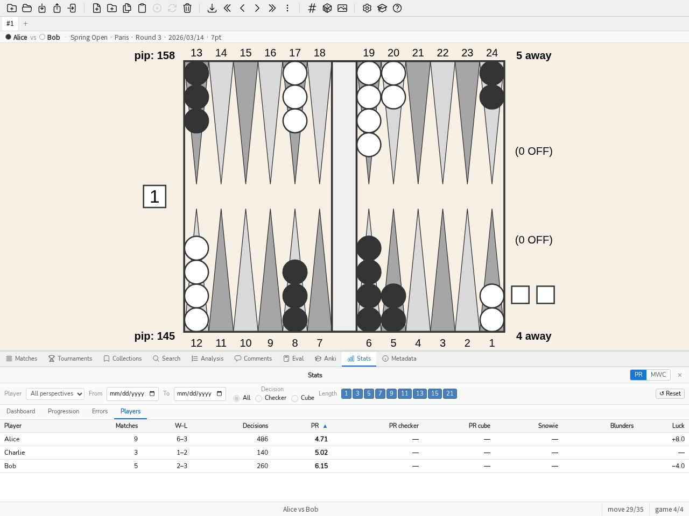

3. Εγχειρίδιο
3.1. Εισαγωγή
Το blunderDB είναι ένα λογισμικό για τη δημιουργία βάσεων δεδομένων με θέσεις τάβλι (backgammon). Η κύρια δύναμή του είναι να παρέχει έναν ενιαίο χώρο για τη συγκέντρωση των θέσεων που έχει συναντήσει ένας παίκτης (στο διαδίκτυο, σε τουρνουά) και τη δυνατότητα να τις μελετήσει ξανά φιλτράροντάς τις σύμφωνα με διάφορα φίλτρα που μπορούν να συνδυαστούν αυθαίρετα. Το blunderDB μπορεί επίσης να χρησιμοποιηθεί για τη δημιουργία καταλόγων θέσεων αναφοράς.
Οι θέσεις αποθηκεύονται σε μια βάση δεδομένων που αναπαρίσταται από ένα αρχείο .db.
3.2. Κύριες αλληλεπιδράσεις
Οι κύριες δυνατές αλληλεπιδράσεις με το blunderDB είναι:
προσθήκη μιας νέας θέσης,
τροποποίηση μιας υπάρχουσας θέσης,
αντιγραφή της εικόνας του ταμπλό στο πρόχειρο (PNG) μέσω CTRL-X, ή μαζί με την πλήρη ανάλυση μέσω CTRL-X CTRL-X,
διαγραφή μιας υπάρχουσας θέσης,
αναζήτηση μίας ή περισσότερων θέσεων,
εισαγωγή αγώνων από διάφορες πηγές (XG, GNUbg, BGBlitz, Jellyfish), συμπεριλαμβανομένων των σχολίων από τα αρχεία XG,
πλοήγηση στις κινήσεις ενός εισηγμένου αγώνα,
οργάνωση των θέσεων σε συλλογές,
οργάνωση των αγώνων σε τουρνουά.
Ο χρήστης μπορεί να επισημάνει ελεύθερα τις θέσεις με ετικέτες (tags) και να τις σχολιάσει μέσω σχολίων.
3.3. Περιγραφή της διεπαφής
Η διεπαφή του blunderDB αποτελείται, από πάνω προς τα κάτω, από:
[επάνω] τη γραμμή εργαλείων, η οποία συγκεντρώνει το σύνολο των κύριων λειτουργιών που μπορούν να εκτελεστούν στη βάση δεδομένων,
[στη μέση] την κύρια περιοχή προβολής, η οποία επιτρέπει την εμφάνιση ή την επεξεργασία θέσεων τάβλι,
[κάτω] τη γραμμή κατάστασης, η οποία παρουσιάζει διάφορες πληροφορίες σχετικά με τη βάση δεδομένων ή την τρέχουσα θέση και ενσωματώνει τη γραμμή εντολών.
Μπορούν να εμφανιστούν πίνακες για:
εμφάνιση των δεδομένων ανάλυσης που σχετίζονται με την τρέχουσα θέση, προερχόμενων από το eXtreme Gammon (XG), το GNUbg ή το BGBlitz,
εμφάνιση, προσθήκη ή τροποποίηση σχολίων,
αναζήτηση και φιλτράρισμα θέσεων με βάση συνδυάσιμα κριτήρια,
εμφάνιση και διαχείριση των συλλογών θέσεων (πίνακας συλλογών),
εμφάνιση της λίστας των εισηγμένων αγώνων και πλοήγηση στις κινήσεις ενός αγώνα (πίνακας αγώνων),
εμφάνιση και διαχείριση των τουρνουά (πίνακας τουρνουά),
εμφάνιση των στατιστικών απόδοσης (πίνακας Stats),
υπολογισμός του EPC (Effective Pip Count) μιας θέσης μαζέματος (bearoff) (πίνακας Eval),
μελέτη των θέσεων με διαστήματα επανάληψης (πίνακας Anki),
την προβολή των μεταδεδομένων της βάσης δεδομένων (πίνακας Μεταδεδομένα).
Μπορούν να εμφανιστούν παράθυρα διαλόγου για:
εμφάνιση της βοήθειας του blunderDB,
εμφάνιση του καταλόγου των ξεναγήσεων (βλ. Ξεναγήσεις και βάση δείγματος),
ρύθμιση της εξαγωγής της βάσης δεδομένων,
ρύθμιση του blunderDB, και ιδίως της γλώσσας της διεπαφής (βλ. Ρυθμίσεις).
Η κύρια περιοχή προβολής παρέχει στον χρήστη:
ένα ταμπλό για την εμφάνιση ή την επεξεργασία μιας θέσης τάβλι,
το επίπεδο και τον κάτοχο του ζαριού (cube),
το pip count κάθε παίκτη,
το σκορ κάθε παίκτη,
τα ζάρια προς παίξιμο. Αν δεν εμφανίζεται καμία τιμή στα ζάρια, η θέση των ζαριών υποδεικνύει ποιος παίκτης έχει τη σειρά και ότι η θέση είναι μια απόφαση κύβου. Όταν η απόφαση κύβου είναι απάντηση σε διπλασιασμό (αποδοχή/πάσο), ο προσφερόμενος κύβος εμφανίζεται στο κέντρο του ταμπλό, στην προσφερόμενη τιμή.
Η γραμμή κατάστασης είναι δομημένη από αριστερά προς τα δεξιά με τις ακόλουθες πληροφορίες:
τη γραμμή εντολών, προσβάσιμη πατώντας το πλήκτρο SPACE,
ένα ενημερωτικό μήνυμα σχετικό με μια λειτουργία που εκτελέστηκε από τον χρήστη,
τον δείκτη της τρέχουσας θέσης, ακολουθούμενο από τον αριθμό των θέσεων στην τρέχουσα βιβλιοθήκη (ή τις πληροφορίες κίνησης/παρτίδας κατά την πλοήγηση σε έναν αγώνα).
Σημείωση
Στην περίπτωση θέσεων που προκύπτουν από μια αναζήτηση του χρήστη, ο αριθμός των θέσεων που υποδεικνύεται στη γραμμή κατάστασης αντιστοιχεί στον αριθμό των φιλτραρισμένων θέσεων.
3.4. Καρτέλες προβολών
Κάτω από τη γραμμή εργαλείων, μια γραμμή καρτελών επιτρέπει την εργασία με πολλές προβολές παράλληλα. Κάθε προβολή είναι ένας ανεξάρτητος χώρος εργασίας που διατηρεί τη δική του λίστα θέσεων, τον δείκτη της τρέχουσας θέσης, την εμφανιζόμενη θέση, την ανάλυση και την επιλεγμένη κίνηση, τον ενεργό πίνακα, το τρέχον σχόλιο καθώς και το πλαίσιο περιήγησης σε έναν αγώνα. Έτσι είναι δυνατόν, για παράδειγμα, να κρατήσετε μια αναζήτηση ανοιχτή σε μια προβολή ενώ περιηγείστε σε έναν αγώνα σε μια άλλη.
Δημιουργία προβολής: κάντε κλικ στο κουμπί + της γραμμής καρτελών ή πατήστε CTRL-T. Η νέα προβολή ξεκινά ως αντίγραφο της τρέχουσας προβολής.
Κλείσιμο προβολής: κάντε κλικ στο σταυρό της καρτέλας ή πατήστε CTRL-W. Η τελευταία προβολή δεν μπορεί να κλείσει.
Αλλαγή προβολής: κάντε κλικ σε μια καρτέλα, πατήστε CTRL-PageUp / CTRL-PageDown (ή SHIFT-J / SHIFT-K) για να μεταβείτε στην προηγούμενη / επόμενη προβολή, ή CTRL-1 έως CTRL-9 για να φτάσετε απευθείας στην ν-οστή προβολή.
Μετονομασία προβολής: κάντε διπλό κλικ στην καρτέλα, εισαγάγετε το νέο όνομα και επιβεβαιώστε με ENTER.
Οι προβολές αποθηκεύονται μαζί με την κατάσταση συνεδρίας της βάσης δεδομένων και επαναφέρονται κατά το επόμενο άνοιγμά της.
3.5. Ρυθμίσεις
Το κουμπί ρυθμίσεων (εικονίδιο γραναζιού) στη γραμμή εργαλείων, αριστερά από το κουμπί βοήθειας, ανοίγει το παράθυρο ρυθμίσεων του blunderDB. Είναι οργανωμένο σε πέντε καρτέλες:
Διεπαφή — γλώσσα, κλίμακα εμφάνισης, θέση του πίνακα·
Χρώματα ταμπλό — τα χρώματα του ταμπλό·
Bearoff — η εκτεταμένη αμφίπλευρη βάση εξόδου που χρησιμοποιεί ο πίνακας Bearoff·
gammonNet — οι ρυθμίσεις του ενσωματωμένου αξιολογητή, που περιγράφονται παρακάτω·
Ταυτότητα εκδότη — το κλειδί που υπογράφει τις σημάνσεις προέλευσής σας, το οποίο περιγράφεται στην ενότητα Διανομή μιας βάσης: προέλευση και κωδικός πρόσβασης.
Η καρτέλα Διεπαφή επιτρέπει την επιλογή γλώσσας ανάμεσα σε αγγλικά, γαλλικά, γερμανικά, ιταλικά, ισπανικά, φινλανδικά, ιαπωνικά, ελληνικά και ρωσικά. Ολόκληρη η διεπαφή (γραμμή εργαλείων, πίνακες, μηνύματα, βοήθεια) μεταφράζεται στην επιλεγμένη γλώσσα. Η επιλογή γλώσσας αποθηκεύεται και διατηρείται από τη μία συνεδρία στην άλλη.
Η ίδια καρτέλα προσφέρει επίσης το κουμπί Συμπύκνωση βάσης, που ανακτά τον χώρο στον δίσκο τον οποίο άφησαν οι διαγραφές (αγώνες, τουρνουά, εκκαθαρίσεις): η βάση δεδομένων δεν μικραίνει ποτέ μόνη της όταν διαγράφονται δεδομένα, η συμπύκνωση αυτή πρέπει να ζητηθεί ρητά. Η λειτουργία μπορεί να πάρει χρόνο σε μεγάλη βάση και απαιτεί προσωρινά περίπου το διπλάσιο του μεγέθους της σε ελεύθερο χώρο (το blunderDB αρνείται να ξεκινήσει αντί να διακινδυνεύσει μια διακοπείσα συμπύκνωση)· ζητείται λοιπόν επιβεβαίωση πριν την εκκίνηση. Το αποτέλεσμα — ο χώρος που κερδήθηκε, σε megabyte — εμφανίζεται έπειτα στη γραμμή κατάστασης. Η ίδια λειτουργία είναι διαθέσιμη από τη γραμμή εντολών με το blunderdb vacuum (βλ. Διεπαφή γραμμής εντολών (CLI)).
Το κουμπί Άνοιγμα του φακέλου καταγραφών ακριβώς από κάτω ανοίγει τον φάκελο που περιέχει το αρχείο καταγραφής της εφαρμογής — χρήσιμο για να επισυνάψετε λεπτομέρειες σε μια αναφορά προβλήματος, ιδίως όταν το blunderDB έχει εκκινηθεί από συντόμευση ή διπλό κλικ, χωρίς συνδεδεμένο τερματικό που να εμφανίζει οτιδήποτε.
Το πλαίσιο Έλεγχος ενημερώσεων κατά την εκκίνηση, απενεργοποιημένο από προεπιλογή, ρωτά μία φορά σε κάθε εκκίνηση τη σελίδα εκδόσεων του αποθετηρίου GitHub και εμφανίζει στη γραμμή κατάστασης ένα μήνυμα αν υπάρχει νεότερη έκδοση — ποτέ ένα παράθυρο που εμποδίζει τη χρήση. Ο έλεγχος αυτός παραμένει αυτόματα απενεργοποιημένος σε εγκατάσταση που έγινε μέσω διαχειριστή πακέτων (Flatpak, Homebrew, πακέτο διανομής…): τότε αυτό το κανάλι διαχειρίζεται τις ενημερώσεις, όχι το ίδιο το blunderDB.
Η καρτέλα Χρώματα ταμπλό επιτρέπει την προσαρμογή των χρωμάτων του ταμπλό. Κάθε στοιχείο διαθέτει τον δικό του επιλογέα χρώματος: το φόντο, το περίγραμμα, οι ανοιχτόχρωμες και σκουρόχρωμες γλώσσες, τα πούλια του παίκτη 1 και του παίκτη 2, τα ζάρια, οι βούλες των ζαριών και ο κύβος. Το κουμπί Επαναφορά επαναφέρει όλα τα προεπιλεγμένα χρώματα. Όπως και η γλώσσα, τα επιλεγμένα χρώματα διατηρούνται από τη μία συνεδρία στην άλλη.
Η καρτέλα Bearoff διαχειρίζεται τους πίνακες μαζέματος του πίνακα Eval (βλ. Πίνακας Eval). Δεν είναι ούτε ενσωματωμένοι στο εκτελέσιμο ούτε μεταφορτωμένοι: το blunderDB τους υπολογίζει στο μηχάνημα που τους χρησιμοποιεί, και το αποτέλεσμα είναι πανομοιότυπο byte προς byte με ό,τι παράγει το gnubg — το αποτύπωμα SHA-256 ελέγχεται πριν γίνει δεκτός ένας πίνακας.
Οι δύο συνηθισμένοι πίνακες (TS-06-06 για την απόφαση ντάμπλου, OS-06 για το EPC) υπολογίζονται στην πρώτη εκκίνηση, στο παρασκήνιο και χωρίς ερώτηση: περίπου έξι δευτερόλεπτα σε έναν πυρήνα, κατά τη διάρκεια των οποίων η εφαρμογή χρησιμοποιείται κανονικά. Ο πίνακας Eval το αναφέρει μόνο αν τοποθετηθεί εκεί θέση που χρειάζεται πίνακα που δεν είναι ακόμη έτοιμος.
Η καρτέλα δείχνει τον ενεργό τομέα και την προέλευσή του, την κατάσταση του μονόπλευρου πίνακα που διαβάζει το EPC, τον φάκελο όπου ζουν όλα αυτά, και τον κατάλογο των υπαρχόντων πινάκων με το μέγεθος και την ετυμηγορία τους. Κάθε γραμμή διαγράφεται ξεχωριστά, μετά από επιβεβαίωση.
Επαληθευμένος ή μη επαληθευμένος. Ένας επαληθευμένος πίνακας έχει ακριβώς τα byte που παράγει το gnubg για τον τομέα του: το αποτύπωμά του SHA-256 υπάρχει στο blunderDB και βρέθηκε ξανά. Ένας μη επαληθευμένος πίνακας είναι καλοσχηματισμένος αλλά ο τομέας του δεν έχει καταγεγραμμένο αποτύπωμα — δεν του καταλογίζεται τίποτα, απλώς κανείς δεν τον συνέκρινε με την αναφορά. Ένας κατεστραμμένος πίνακας αντιφάσκει με τον εαυτό του και δεν διαβάζεται ποτέ· ξαναϋπολογίζεται.
Υπολογισμός ευρύτερου πίνακα. Ο τομέας επιλέγεται από μια λίστα δύο οικογενειών, μαζί με τον αριθμό πυρήνων που θα του αφιερωθούν (εξ ορισμού όλοι εκτός από έναν, ώστε το μηχάνημα να παραμένει χρησιμοποιήσιμο):
ακριβής κύβος (αμφίπλευρος), από TS-06-06 έως TS-06-15: διευρύνει τον τομέα όπου η πιθανότητα νίκης και η ετυμηγορία κύβου διαβάζονται αντί να εκτιμώνται·
EPC εκτός του σπιτιού (μονόπλευρος), από OS-06 έως OS-10: διευρύνει την απόσταση στην οποία μπορεί να βρίσκεται ένα πούλι χωρίς να σωπάσει το μπλοκ EPC. Αυτή η σάρωση διαβάζει μόνο θέσεις μικρότερες από αυτήν που υπολογίζει, άρα είναι σειριακή εκ κατασκευής και ο αριθμός πυρήνων δεν της χρησιμεύει — ο επιλογέας το λέει γκριζάροντας.
Πριν ξεκινήσει οτιδήποτε, η καρτέλα δηλώνει τρία μεγέθη για τον επιλεγμένο τομέα: το μέγεθος στον δίσκο, τη μνήμη που απαιτείται κατά τον υπολογισμό, και τον χρόνο που θα έπρεπε να πάρει σε αυτό το μηχάνημα. Το τελευταίο ξεκινά ως εκτίμηση και γίνεται μέτρηση: κάθε αρκετά ευρύς υπολογισμός καταγράφει τη δική του ταχύτητα και τη διατηρεί. Ένας τομέας που δεν επιτρέπει η διαθέσιμη μνήμη προσφέρεται σε γκρίζο, με την αιτία — «θα χρειάζονταν 24 GB, απομένουν 12» είναι απάντηση, μια απούσα γραμμή δεν θα ήταν.
Ως τάξη μεγέθους, σε μηχάνημα δεκαέξι νημάτων: ο TS-06-09 ζυγίζει 191 MB και θέλει καμιά δεκαριά δευτερόλεπτα, ο TS-06-11 ζυγίζει 1,2 GB και μερικά λεπτά, ο TS-06-13 ξεπερνά ό,τι μπορούν να κρατήσουν στη μνήμη τα περισσότερα μηχανήματα. Από τη μονόπλευρη πλευρά, σε έναν πυρήνα: ο OS-07 ζυγίζει 4,9 MB και θέλει 17 δ, ο OS-08 15 MB και 1 λ 20, ο OS-10 117 MB και μισή ώρα.
Παύση και συνέχιση. Κατά τον υπολογισμό, η πρόοδος δείχνει τον μετρημένο υπολειπόμενο χρόνο και δύο ξεχωριστά κουμπιά: Παύση και Ακύρωση. Η παύση γράφει την κατάσταση του υπολογισμού δίπλα στον πίνακα· η επανεκκίνησή του συνεχίζει από εκεί που σταμάτησε αντί να ξεκινήσει από την αρχή. Η ακύρωση δεν κρατά τίποτα. Το κλείσιμο του παραθύρου ρυθμίσεων δεν διακόπτει τίποτα — ο υπολογισμός συνεχίζεται στο παρασκήνιο.
Ένας υπολογισμός σε παύση βρίσκεται ξανά στην επόμενη εκκίνηση, ονομασμένος και με ποσοστό («ο TS-06-09 διακόπηκε στο 43 %»), με Συνέχιση και Διαγραφή. Τίποτα δεν ξεκινά μόνο του: ο χρήστης ζήτησε τη διακοπή.
Η καρτέλα επιτρέπει τέλος να δείξετε ένα εξωτερικό αμφίπλευρο αρχείο .bd, για παράδειγμα μια βάση που παρήγαγε το ίδιο το gnubg: κερδίζει ο πίνακας με τον ευρύτερο τομέα.
Η καρτέλα gammonNet ρυθμίζει τον ενσωματωμένο αξιολογητή (βλ. ADR-0011). Δύο βάθη αναζήτησης ρυθμίζονται εκεί, ονομασμένα και αποθηκευμένα ξεχωριστά — η μείωση του ενός δεν τροποποιεί ποτέ το άλλο:
Βάθος εμφάνισης — η διαδραστική άνεση κατά την επεξεργασία του ταμπλό· δεν γράφεται ποτέ στη βάση.
Βάθος ανάλυσης — αυτό που η δέσμη ανάλυσης μετά την εισαγωγή γράφει στην Ανάλυση μιας θέσης.
Και τα δύο έχουν προεπιλογή 2-ply, την κανονική διαμόρφωση. Η καρτέλα προσφέρει επίσης το κλάδεμα (προεπιλογή k=12) και τον αριθμό των εμφανιζόμενων υποψήφιων κινήσεων (προεπιλογή 10), καθώς και ένα πλαίσιο επιλογής αυτόματη ανάλυση μετά την εισαγωγή το οποίο, μόλις ενεργοποιηθεί, ελέγχει μετά από κάθε εισαγωγή αν απομένουν θέσεις χωρίς καμία ανάλυση (ούτε gammonNet, ούτε XG, ούτε GNUbg, ούτε BGBlitz — ο κανόνας είναι «μια αξιολόγηση συμπληρώνει μόνο ένα κενό», ποτέ αντικατάσταση) και, αν χρειάζεται, ξεκινά στο παρασκήνιο μια ανάλυση gammonNet στο ρυθμισμένο βάθος ανάλυσης. Ένα κουμπί Ανάλυση τώρα επανεκκινεί χειροκίνητα την ίδια συμπλήρωση, χρήσιμο για μια βιβλιοθήκη που δημιουργήθηκε πριν από αυτή τη λειτουργία.
Ένα δεύτερο κουμπί, Επανάλυση παρωχημένων θέσεων, καλύπτει την αντίστροφη περίπτωση: μια θέση που έχει ήδη αναλυθεί από το gammonNet, αλλά της οποίας η αποθηκευμένη ανάλυση γράφτηκε από παλαιότερη έκδοση του μηχανισμού σε σχέση με αυτή που εκτελείται τώρα, ή σε διαφορετικό βάθος από το ρυθμισμένο βάθος ανάλυσης παραπάνω, επισημαίνεται εκεί ως παρωχημένη και επαναξιολογείται. Μια θέση που φέρει επιπλέον ανάλυση XG, GNUbg ή BGBlitz δεν επηρεάζεται ποτέ από αυτό το κουμπί, ανεξαρτήτως του περιεχομένου gammonNet της — η προστασία του ADR-0013 παραμένει άνευ όρων. Ο αριθμός που εμφανίζεται δίπλα σε κάθε κουμπί (θέσεις χωρίς ανάλυση, παρωχημένες θέσεις) είναι καθαρά ενημερωτικός· η δέσμη επανυπολογίζει τη δική της λίστα κατά την εκκίνηση.
Και οι δύο δέσμες είναι οριοθετημένες, ορατές και ακυρώσιμες, ποτέ ένας σιωπηλός δαίμονας: η πρόοδός τους (αναλυμένες θέσεις / σύνολο) και ένα κουμπί ακύρωσης εμφανίζονται στη γραμμή κατάστασης καθ” όλη τη διάρκειά τους, και εξαφανίζονται μόλις ολοκληρωθούν, δίνοντας τη θέση τους σε ένα μήνυμα που συνοψίζει το αποτέλεσμα — πόσες θέσεις αναλύθηκαν, πόσες απορρίφθηκαν (μια θέση που το gammonNet αρνείται να αξιολογήσει, όπως ένα σκορ αγώνα εκτός του εύρους του πίνακά του, κάτι που δεν είναι ποτέ βλάβη) και πόσες απέτυχαν (επαναλαμβάνονται, αμετάβλητες, στην επόμενη εκτέλεση). Το κλείσιμο της εφαρμογής κατά τη διάρκεια της μιας ή της άλλης δεν χάνει τίποτα: κάθε αναλυμένη θέση γράφεται σταδιακά, και η επόμενη εκτέλεση συνεχίζει ακριβώς από εκεί που είχε σταματήσει η ανάλυση, χωρίς κανένα ημερολόγιο να τηρείται.
Το παράθυρο διαμόρφωσης παρέχει επίσης ρυθμίσεις εμφάνισης της διεπαφής. Ένα ρυθμιστικό κλίμακας διεπαφής σας επιτρέπει να μεγεθύνετε ή να σμικρύνετε όλα τα στοιχεία της διεπαφής, κάτι που είναι χρήσιμο σε οθόνες υψηλής πυκνότητας ή για τη βελτίωση της αναγνωσιμότητας. Ένα μενού θέσης των πλαισίων καθορίζει πού εμφανίζονται τα πλαίσια (αναζήτηση, ματς, ανάλυση) σε σχέση με το ταμπλό: κάτω, στο πλάι ή αυτόματα (το πλάι επιλέγεται τότε σε πλατιές οθόνες για την καλύτερη αξιοποίηση του διαθέσιμου χώρου). Όπως και οι άλλες ρυθμίσεις, αυτές οι επιλογές διατηρούνται από τη μία συνεδρία στην άλλη.
3.6. Ξεναγήσεις και βάση δείγματος
Για να διευκολυνθεί η εξοικείωση, το blunderDB προσφέρει ξεναγήσεις του περιβάλλοντος. Ο κατάλογος των ξεναγήσεων ανοίγει από τη γραμμή εργαλείων ή με την εντολή tour (ψευδώνυμο tutorial). Είναι διαθέσιμες επτά ξεναγήσεις: μια γενική ξενάγηση του περιβάλλοντος, και ξεναγήσεις αφιερωμένες στην αναζήτηση θέσεων, στην ανασκόπηση αγώνων, στην ανασκόπηση τουρνουά, στον πίνακα Eval, στην επανάληψη Anki και στα στατιστικά. Κάθε ξενάγηση επισημαίνει τα σχετικά στοιχεία του περιβάλλοντος, βήμα προς βήμα, ανοίγει τον πίνακα για τον οποίο μιλά, και μπορεί να επαναληφθεί ανά πάσα στιγμή. Κατά την πρώτη εκκίνηση, η γενική ξενάγηση προτείνεται αυτόματα.
Η εντολή demo φορτώνει μια βάση δείγματος που επιτρέπει την εξερεύνηση των λειτουργιών του εργαλείου χωρίς εισαγωγή δικών σας παρτίδων: τρεις αγώνες (δύο από τους οποίους ομαδοποιημένοι σε ένα τουρνουά) αναλυμένους από τα eXtreme Gammon, BGBlitz και gammonNet, τρεις θεματικές συλλογές, σχόλια με ετικέτες (#blunder, #cube) και μια τράπουλα Anki με το ημερολόγιο επαναλήψεών της. Οι παίκτες, το τουρνουά και ο τόπος είναι φανταστικοί. Οι καθοδηγούμενες περιηγήσεις βασίζονται σε αυτή τη βάση όταν καμία βάση δεν είναι ανοιχτή.
3.8. Επεξεργασία θέσεων
Το πάτημα του πλήκτρου TAB ανοίγει τον πίνακα αναζήτησης και επιτρέπει την επεξεργασία μιας θέσης στο ταμπλό για την προσθήκή της στη βάση δεδομένων ή τον ορισμό μιας δομής θέσης προς αναζήτηση. Η κατανομή των πουλιών, ο κύβος (cube), το σκορ και η σειρά μπορούν να τροποποιηθούν με τη βοήθεια του ποντικιού (βλ. Επεξεργασία θέσης).
Πρακτική συμβουλή
Ανατρέξτε στο Συντομεύσεις πληκτρολογίου για τις διαθέσιμες συντομεύσεις.
3.9. Η γραμμή εντολών
Η γραμμή εντολών, ενσωματωμένη στη γραμμή κατάστασης, επιτρέπει την εκτέλεση του συνόλου των λειτουργιών του blunderDB που είναι διαθέσιμες στη γραφική διεπαφή: γενικές λειτουργίες στη βάση δεδομένων, πλοήγηση θέσεων, εμφάνιση της ανάλυσης ή/και των σχολίων, αναζήτηση θέσεων με βάση φίλτρα… Μετά την πρώτη εξοικείωση με τη διεπαφή, συνιστάται η σταδιακή χρήση της γραμμής εντολών, η οποία επιτρέπει μια ισχυρή και ομαλή χρήση του blunderDB, ιδίως για τις λειτουργίες αναζήτησης θέσεων.
Για να ανοίξετε τη γραμμή εντολών, πατήστε το πλήκτρο SPACE. Για να υποβάλετε ένα ερώτημα και να κλείσετε τη γραμμή εντολών, πατήστε το πλήκτρο ENTER.
Το blunderDB εκτελεί τα ερωτήματα που αποστέλλονται από τον χρήστη υπό την προϋπόθεση ότι είναι έγκυρα και τροποποιεί αμέσως την κατάσταση της βάσης δεδομένων εφόσον χρειάζεται. Δεν απαιτούνται ρητές ενέργειες αποθήκευσης από την πλευρά του χρήστη.
Πρακτική συμβουλή
Ανατρέξτε στο Τομέας 4 για τη λίστα των διαθέσιμων εντολών στη γραμμή εντολών.
3.10. Πίνακας Ανάλυσης
Ο πίνακας Ανάλυσης (CTRL-L) εμφανίζει τα δεδομένα ανάλυσης της τρέχουσας θέσης, εισηγμένα από το eXtreme Gammon (XG), το GNUbg ή το BGBlitz. Παρουσιάζει τις καλύτερες εναλλακτικές (κινήσεις πουλιών ή αποφάσεις κύβου) μαζί με τις τιμές equity τους και τα αντίστοιχα σφάλματα. Το πλήκτρο d εναλλάσσεται μεταξύ της ανάλυσης κινήσεων πουλιών και της ανάλυσης κύβου. Κατά την πλοήγηση σε έναν αγώνα, η κίνηση που παίχτηκε πραγματικά επισημαίνεται στη λίστα των εναλλακτικών. Πατήστε CTRL-L ή εκτελέστε την εντολή list για να εμφανίσετε ή να αποκρύψετε τον πίνακα.
Οι κινήσεις γράφονται όπως διαβάζονται στο ταμπλό, εδώ όπως και στον πίνακα Eval: το λιγότερο προχωρημένο πούλι κινείται πρώτο, και ένα πούλι που χρησιμοποιεί διαδοχικά περισσότερα ζάρια γράφεται μία μόνο φορά — ένα 64 που παίζεται με το ίδιο πούλι διαβάζεται 24/14, και 24/14* αν χτυπά κατά την άφιξη. Η λεπτομέρεια της διαδρομής επανεμφανίζεται μόνο όταν λέει κάτι παραπάνω: ένα χτύπημα καθ” οδόν διατηρεί το ενδιάμεσο σημείο του, 24/18* 18/14, αλλιώς το χτύπημα στο 18 θα εξαφανιζόταν από τη σημειογραφία.
Η ισοδυναμία μιας εισαγόμενης ανάλυσης ακολουθεί τον ίδιο κανόνα με τον πίνακα Eval: η στήλη δηλώνει το δικό της πλαίσιο αναφοράς, «Equity (money)» ή «Equity (match)» ανάλογα με το σκορ της αναλυόμενης θέσης, ποτέ ένα απλό «Equity» χωρίς ένδειξη κλίμακας. Οι κανόνες Jacoby και Beaver που ισχύουν σε μια θέση money game εμφανίζονται επίσης, ως ετικέτες κάτω από τον πίνακα απόφασης κύβου.
3.11. Πίνακας Σχολίων
Ο πίνακας Σχολίων (CTRL-P) εμφανίζει, προσθέτει και τροποποιεί τα σχόλια που σχετίζονται με την τρέχουσα θέση. Τα σχόλια που εισάγονται από τα αρχεία XG συσχετίζονται αυτόματα με τις αντίστοιχες θέσεις. Πατήστε CTRL-P ή εκτελέστε την εντολή comment για να εμφανίσετε ή να αποκρύψετε τον πίνακα.
3.12. Πίνακας Αναζήτησης
Ο πίνακας Αναζήτησης (CTRL-F ή TAB) επιτρέπει το φιλτράρισμα των θέσεων σύμφωνα με κριτήρια που συνδυάζονται ελεύθερα: δομή πουλιών, τύπος απόφασης κύβου, μέγεθος σφάλματος, ημερομηνίες, ετικέτες κ.λπ. Το πλήκτρο TAB ανοίγει ταυτόχρονα τον πίνακα αναζήτησης και τον επεξεργαστή θέσης, επιτρέποντας τον ορισμό μιας δομής πουλιών προς αναζήτηση πάνω στο ταμπλό.

Ο πίνακας Αναζήτησης: αριθμητικά φίλτρα, δομή πουλιών στο ταμπλό, καρτέλες At least / Except.
Για να βελτιώσετε μια αναζήτηση μεταξύ των τρεχουσών φιλτραρισμένων θέσεων, χρησιμοποιήστε την εντολή ss ακολουθούμενη από φίλτρα (π.χ.: ss nc, ss E>40). Ο πίνακας αναζήτησης προσφέρει επίσης ένα πλαίσιο ελέγχου Search in current results για την ίδια λειτουργία.
Το πάνελ προσφέρει έναν ρητό έλεγχο του τύπου απόφασης που αναζητείται: Αδιάφορο (κανένα φίλτρο), Πιόνια (αποφάσεις κίνησης) ή Κύβος (αποφάσεις κύβου). Όταν είναι επιλεγμένο το Κύβος, μια δεύτερη λίστα προσδιορίζει τον υποτύπο: Όλα, Διπλασιασμός / Όχι (ο παίκτης που έχει τη σειρά πρέπει να αποφασίσει αν θα διπλασιάσει) ή Αποδοχή / Πάσο (απάντηση σε διπλασιασμό του αντιπάλου). Ο έλεγχος είναι συγχρονισμένος με το ταμπλό: η αλλαγή των ζαριών ή του κύβου στο ταμπλό ενημερώνει τον τύπο απόφασης, και αντίστροφα. Στη λειτουργία Αποδοχή / Πάσο, ο κύβος εμφανίζεται στο κέντρο του ταμπλό στην προσφερόμενη τιμή· η τιμή αυτή παραμένει επεξεργάσιμη.
Το φίλτρο Επισημασμένη διατηρεί τις θέσεις που επισημάνατε στο λογισμικό προέλευσης του αγώνα. Μόνο το eXtreme Gammon παράγει αυτή την πληροφορία, καταγεγραμμένη κίνηση προς κίνηση στο αρχείο .xg· το blunderDB τη διαβάζει κατά την εισαγωγή και τη διατηρεί. Μια επισημασμένη απόφαση κύβου δίνει δύο επισημασμένες θέσεις, τον διπλασιασμό και την αποδοχή/πάσο, καθώς το blunderDB χωρίζει στα δύο ό,τι το αρχείο προέλευσης καταγράφει ως μία απόφαση.
Σημείωση
Η επισήμανση δεν είναι αναδρομική: οι αγώνες που βρίσκονται ήδη στη βάση δεν φέρουν αυτή την πληροφορία, καθώς υπάρχει μόνο στα αρχεία προέλευσης. Αρκεί να εισαγάγετε ξανά το σχετικό αρχείο .xg — η εισαγωγή εντοπίζει το διπλότυπο και δεν προσθέτει τίποτε άλλο πέρα από τις επισημάνσεις, χωρίς να θίγει τα υπάρχοντα σχόλια ή τις αναλύσεις. Η επισήμανση δεν μπορεί ούτε να τεθεί ούτε να αφαιρεθεί από το blunderDB: για έναν προσωρινό κατάλογο εργασίας, χρησιμοποιήστε καλύτερα μια συλλογή.
Το φίλτρο Σχόλιο ερευνά τα σχόλια που συνδέονται με τις θέσεις σε τρεις αποκλειστικές λειτουργίες. περιέχει κείμενο αναζητά μία ή περισσότερες λέξεις στο κείμενο των σχολίων (πεδίο εισαγωγής, λέξεις χωρισμένες με ;, τουλάχιστον μία πρέπει να ταιριάζει)· έχει σχόλιο διατηρεί κάθε θέση που φέρει σχόλιο, ανεξάρτητα από το περιεχόμενό του· χωρίς σχόλιο διατηρεί αντιθέτως τις μη σχολιασμένες θέσεις — χρήσιμο, σε συνδυασμό με φίλτρο σφάλματος ή ημερομηνίας, για να καταρτίσετε τον κατάλογο όσων απομένουν προς σχολιασμό.
Σημείωση
Τα σχόλια που εισάγονται από αρχείο αγώνα (XG, GNUbg) μετρούν ως σχόλια: το blunderDB δεν διατηρεί την προέλευσή τους και επομένως δεν μπορεί να διακρίνει μια σημείωση που πληκτρολογήσατε από μια σημείωση που προέρχεται από το αρχείο προέλευσης. Εξάλλου, τα σχόλια που συνδέονται με έναν αγώνα ή ένα τουρνουά δεν αφορούν αυτό το φίλτρο: σχολιάζουν τον αγώνα ή το τουρνουά, όχι τις θέσεις του.
Το φίλτρο Αγώνες & Τουρνουά στηρίζεται σε έναν κοινό επιλογέα (παράθυρο διαλόγου) αντί για την πληκτρολόγηση αριθμητικών αναγνωριστικών: δύο λίστες με πλαίσια ελέγχου, μία για τους αγώνες και μία για τα τουρνουά, καθεμία φιλτραρίσιμη με κείμενο (παίκτης, ημερομηνία, διοργάνωση για τους αγώνες· όνομα, ημερομηνία, τοποθεσία για τα τουρνουά), με κουμπιά Όλα / Κανένα που ενεργούν μόνο στο τρέχον φιλτραρισμένο υποσύνολο. Η επιλογή ενός τουρνουά επιλέγει αυτόματα (και γκριζάρει) τους αγώνες-μέλη του στη λίστα αγώνων, καθιστώντας εμφανές ότι ένα τουρνουά ισοδυναμεί με το σύνολο των αγώνων του.
Ο πίνακας αναζήτησης διαθέτει τρεις καρτέλες στο αριστερό του άκρο: Recherche (τα φίλτρα), Historique και Enregistrés. Η καρτέλα Historique παραθέτει τις προηγούμενες αναζητήσεις με την ημερομηνία και την εντολή τους: ένα κλικ επιλέγει μια αναζήτηση και εμφανίζει τη σχετική θέση στο ταμπλό, ένα διπλό κλικ την εκτελεί ξανά. Κάθε καταχώριση μπορεί να αποθηκευτεί στη βιβλιοθήκη φίλτρων (εικονίδιο σελιδοδείκτη, δίνοντας ένα όνομα στο φίλτρο) ή να διαγραφεί. Η καρτέλα Enregistrés περιέχει τη βιβλιοθήκη φίλτρων: κάντε διπλό κλικ σε ένα αποθηκευμένο φίλτρο για να εκτελέσετε ξανά την αντίστοιχη αναζήτηση (βλ. Παράρτημα: Προχωρημένη χρήση των φίλτρων). Η εντολή history (ψευδώνυμο hi) ανοίγει τον πίνακα αναζήτησης.
Πρακτική συμβουλή
Ανατρέξτε στο Τομέας 4 για τη λίστα των διαθέσιμων φίλτρων.
3.13. Πίνακας Συλλογών

Ο πίνακας Συλλογών: όνομα, αριθμός θέσεων, περιγραφή, τελευταία τροποποίηση.
Ο πίνακας Συλλογές (CTRL-B) διαχειρίζεται συλλογές θέσεων. Οι συλλογές μπορούν να δημιουργηθούν, να μετονομαστούν και να διαγραφούν. Θέσεις μπορούν να προστεθούν ή να αφαιρεθούν (πλήκτρο Delete, ζητείται επιβεβαίωση). Διπλό κλικ σε μια συλλογή για να περιηγηθείτε στις θέσεις της με τα πλήκτρα ΑΡΙΣΤΕΡΑ και ΔΕΞΙΑ. Η σειρά των συλλογών και των θέσεων μέσα σε μια συλλογή αλλάζει με μεταφορά και απόθεση. Πατήστε CTRL-B ή εκτελέστε την εντολή collection για να εμφανίσετε ή να αποκρύψετε τον πίνακα.
3.14. Πίνακας Αγώνων
Ο πίνακας Αγώνων (CTRL-Tab) παραθέτει τους εισηγμένους αγώνες. Κάντε διπλό κλικ σε έναν αγώνα (ή πατήστε ENTER) για να πλοηγηθείτε στις κινήσεις του. Η εντολή m συνεχίζει την πλοήγηση στον τελευταίο αγώνα που επισκεφτήκατε.
Ο χρήστης μπορεί:
να περιηγηθεί στις κινήσεις ενός αγώνα χρησιμοποιώντας τα πλήκτρα ΑΡΙΣΤΕΡΑ και ΔΕΞΙΑ,
να μεταβεί από τη μία παρτίδα στην άλλη με τη βοήθεια των πλήκτρων PageUp και PageDown,
να εμφανίσει την ανάλυση των κινήσεων (πουλιά και κύβος) πατώντας CTRL-L,
να εναλλάσσεται μεταξύ της ανάλυσης κινήσεων πουλιών και κύβου με το πλήκτρο d,
να δει την κίνηση που παίχτηκε πραγματικά επισημασμένη στην ανάλυση.
Η τελευταία θέση που επισκεφτήκατε σε κάθε αγώνα αποθηκεύεται και επαναφέρεται αυτόματα. Πατήστε CTRL-Tab ή εκτελέστε την εντολή match για να εμφανίσετε ή να αποκρύψετε τον πίνακα.
Κάθε αγώνας μπορεί να εξαχθεί σε μεταγραφή Jellyfish .mat μέσω του κουμπιού ⬇ της λίστας αγώνων ή του κουμπιού .mat της καρτέλας του αγώνα.
Το κουμπί Συγχώνευση παικτών της γραμμής εργαλείων του πίνακα ανοίγει ένα παράθυρο που παραθέτει όλα τα ονόματα παικτών της βάσης με τον αριθμό των αγώνων τους: επιλέξτε τις παραλλαγές ορθογραφίας του ίδιου παίκτη, επιλέξτε το κανονικό όνομα που θα διατηρηθεί και έπειτα συγχωνεύστε. Χρήσιμο για την ενοποίηση των στατιστικών ανά παίκτη όταν ο ίδιος παίκτης εμφανίζεται με πολλά ονόματα.
Όταν ένας αγώνας είναι ανοιχτός, μια γραμμή πληροφοριών εμφανίζεται πάνω από το ταμπλό: υπενθυμίζει τους παίκτες που συμμετέχουν (παίκτης 1 εναντίον παίκτης 2) καθώς και το πλαίσιο του αγώνα (διοργάνωση, τόπος, γύρος, ημερομηνία και μήκος του αγώνα, όταν αυτές οι πληροφορίες είναι διαθέσιμες). Αυτή η γραμμή εμφανίζεται και εκτός της λειτουργίας αγώνα: όταν μια μελετώμενη θέση (που προκύπτει από μια αναζήτηση, μια συλλογή ή μια άμεση πρόσβαση) προέρχεται από έναν ή περισσότερους αγώνες, υποδεικνύει την προέλευσή της — τον πρώτο σχετικό αγώνα και, ενδεχομένως, ένα σήμα «+N» που παραθέτει τους υπόλοιπους κατά το πέρασμα του δείκτη. Μια θέση που εισήχθη μεμονωμένα, την οποία δεν αναφέρει κανένας αγώνας, δεν εμφανίζει τίποτα.
Κατά το άνοιγμα μιας βάσης που περιέχει ματς, το πλαίσιο Ματς εμφανίζεται αμέσως και η ανασκόπηση ξεκινά απευθείας από την πρώτη θέση, ώστε να μπορείτε να ξεκινήσετε αμέσως την πλοήγηση.
Σημείωση
Μια βάση δεδομένων μπορεί να ανοιχτεί για εγγραφή μόνο από ένα παράθυρο τη φορά. Αν ανοίξετε μια βάση ήδη ανοιχτή σε άλλο παράθυρο του blunderDB, ανοίγει μόνο για ανάγνωση: η περιήγηση, η αναζήτηση και η ανάλυση παραμένουν δυνατές, αλλά κάθε τροποποίηση είναι απενεργοποιημένη και η γραμμή τίτλου εμφανίζει «[μόνο για ανάγνωση]».
Πρακτική συμβουλή
Ανατρέξτε στο Συντομεύσεις πληκτρολογίου για τις διαθέσιμες συντομεύσεις.
3.15. Πίνακας Τουρνουά

Ο πίνακας Τουρνουά: ένα τουρνουά ανά γραμμή, αριθμός ματς, PR του παίκτη αναφοράς.
Ο πίνακας Τουρνουά (CTRL-Y) επιτρέπει την ομαδοποίηση αγώνων σε τουρνουά για οργανωμένη παρακολούθηση και στατιστική ανάλυση ανά διοργάνωση. Τα τουρνουά μπορούν να δημιουργηθούν, να μετονομαστούν και να διαγραφούν· οι αγώνες μπορούν να ανατεθούν σε αυτά. Τα στατιστικά του πίνακα Stats μπορούν να φιλτραριστούν ανά τουρνουά. Πατήστε CTRL-Y για να εμφανίσετε ή να αποκρύψετε τον πίνακα.
Τα τουρνουά γεμίζουν από μόνα τους κατά την εισαγωγή. Τα αρχεία XG, GnuBG και BGF ονομάζουν τη διοργάνωσή τους· όταν εισάγεται ένας νέος αγώνας, το blunderDB τον κατατάσσει στο τουρνουά με αυτό το όνομα και το δημιουργεί αν δεν υπάρχει ακόμη. Η ημερομηνία και ο τόπος του τουρνουά μένουν κενά — εδώ συμπληρώνονται. Ένας αγώνας που υπάρχει ήδη στη βάση δεν ανακατατάσσεται ποτέ: η εκ νέου εισαγωγή του αρχείου του δεν αναιρεί την ταξινόμηση που έγινε με το χέρι.
Η στήλη PR κάθε τουρνουά εμφανίζει το PR του παίκτη αναφοράς — δηλαδή του παίκτη που συμμετέχει στους περισσότερους αγώνες του τουρνουά (σε περίπτωση ισοπαλίας, εκείνου που πήρε τις περισσότερες αποφάσεις). Το PR δεν αναμειγνύει επομένως το δικό σας παιχνίδι με εκείνο των αντιπάλων σας: για τα δικά σας τουρνουά, αντικατοπτρίζει μόνο τη δική σας απόδοση. Το όνομα του παίκτη αναφοράς εμφανίζεται σε πλαίσιο υπόδειξης όταν περνάτε πάνω από την τιμή.
3.16. Πίνακας Stats
3.16.1. Εισαγωγή
Ο πίνακας Stats επιτρέπει την ανάλυση του επιπέδου παιχνιδιού και την παρακολούθηση της προόδου στο χρόνο με βάση τις θέσεις που έχουν εισαχθεί στη βάση δεδομένων. Υπολογίζει και εμφανίζει τους δείκτες PR (Performance Rate) και MWC cost (Match Winning Chance cost) για το σύνολο των θέσεων ή για ένα φιλτραρισμένο υποσύνολο.
Ο πίνακας Stats είναι ιδιαίτερα χρήσιμος για:
τον προσδιορισμό του επιπέδου σας σε σχέση με τα κατώφλια αναφοράς (world-class, expert, advanced…) χάρη στο συνολικό PR·
την παρακολούθηση της προόδου σας τουρνουά προς τουρνουά ή αγώνα προς αγώνα χάρη στα γραφήματα της καρτέλας Progression·
τον εντοπισμό των αδυναμιών σας: η καρτέλα Erreurs εμφανίζει την κατανομή μεταξύ κινήσεων πουλιών και αποφάσεων κύβου, καθώς και την κατανομή των μεγεθών σφάλματος·
σύγκριση των παικτών της βάσης μεταξύ τους, μία γραμμή ανά παίκτη, μέσω της καρτέλας Παίκτες — χρήσιμο για την παρακολούθηση μιας ολόκληρης διοργάνωσης·
την άμεση πρόσβαση στις σχετικές θέσεις κάνοντας κλικ σε οποιονδήποτε δείκτη (drill-down).
3.16.2. Άνοιγμα του πίνακα
Για να ανοίξετε τον πίνακα Stats:
Πατήστε CTRL-D.
Πληκτρολογήστε την εντολή
:statsή:stστη γραμμή εντολών.
Σημείωση
Ο πίνακας ανανεώνεται αυτόματα σε κάθε τροποποίηση του φίλτρου. Δεν επανυπολογίζει τα στατιστικά κατά την απλή εναλλαγή PR ↔ MWC: και οι δύο μετρικές υπολογίζονται ταυτόχρονα από το backend.
3.16.3. Γραμμή φίλτρου
Η γραμμή φίλτρου, στο επάνω μέρος του πίνακα, επιτρέπει τον περιορισμό του υπολογισμού σε ένα υποσύνολο θέσεων.
3.16.3.1. Οπτική γωνία παίκτη
Η αναπτυσσόμενη λίστα Παίκτης επιτρέπει το φιλτράρισμα των στατιστικών σύμφωνα με τον αναλυόμενο παίκτη. Το blunderDB επιλέγει αυτόματα τον παίκτη του οποίου το όνομα εμφανίζεται πιο συχνά στη βάση δεδομένων — τροποποιήσιμο ανά πάσα στιγμή.
Πρακτική συμβουλή
Η αλλαγή παίκτη δεν προκαλεί απώλεια δεδομένων· αρκεί να επιλέξετε ξανά τον προηγούμενο παίκτη από τη λίστα.
3.16.3.2. Διαθέσιμα φίλτρα
Τουρνουά — περιορισμός σε ένα ή περισσότερα τουρνουά. Μπορούν να επιλεγούν πολλά τουρνουά ταυτόχρονα.
Ημερομηνίες — χρονικό εύρος (Από … Έως). Αν συμπληρωθεί μόνο η ημερομηνία έναρξης, περιλαμβάνονται οι πιο πρόσφατες θέσεις.
Τύπος απόφασης — Όλα / Κινήσεις πουλιών / Αποφάσεις κύβου.
Διάρκεια αγώνα — περιορισμός σε συγκεκριμένα μήκη αγώνα (1, 3, 5, 7, 9, 11, 13, 15, 21 πόντοι). Μπορούν να συνδυαστούν πολλά μήκη.
Ένα κουμπί Reset μηδενίζει όλα τα φίλτρα (εκτός από τον αυτόματα εντοπισμένο παίκτη).
Σημείωση
Τα φίλτρα αποθηκεύονται στις ρυθμίσεις του blunderDB (config.yaml) και επαναφέρονται κατά το επόμενο άνοιγμα.
3.16.4. Εναλλαγή PR / MWC
Το κουμπί PR / MWC στο επάνω μέρος του πίνακα εναλλάσσει την εμφανιζόμενη μετρική σε όλες τις καρτέλες.
PR (Performance Rate)
Μετρά την ποιότητα παιχνιδιού money-game: άθροισμα των σφαλμάτων σε χιλιοστά του πόντου, διαιρεμένο με τον αριθμό των αποφάσεων. Ανεξάρτητο από το σκορ του αγώνα.
Κατά προσέγγιση κατώφλια αναφοράς:
Επίπεδο
PR
World-class
< 3
Expert
3 – 5
Προχωρημένος
5 – 8
Μέσος
8 – 12
Αρχάριος
> 12
MWC cost (Match Winning Chance cost)
Σωρευτική πιθανότητα νίκης αγώνα που χάνεται εξαιτίας των σφαλμάτων, σε ολόκληρο το φιλτραρισμένο σύνολο δεδομένων. Υπολογίζεται με βάση τη MET Kazaross-XG2 που είναι ενσωματωμένη στο blunderDB.
Προσοχή
Το MWC cost δεν εφαρμόζεται στις θέσεις money-game (χωρίς διακύβευμα αγώνα). Αυτές οι θέσεις εξαιρούνται από τον υπολογισμό MWC. Οι τιμές MWC εξαρτώνται από τη MET που χρησιμοποιείται· δεν είναι άμεσα συγκρίσιμες μεταξύ λογισμικών που χρησιμοποιούν διαφορετικές METs.
Η εναλλαγή PR ↔ MWC είναι ακαριαία: δεν πραγματοποιείται κανένας επανυπολογισμός στο backend.
3.16.5. Καρτέλα Dashboard
Η καρτέλα Dashboard παρέχει μια συνοπτική εικόνα των βασικών δεικτών.

Η καρτέλα Dashboard: συνολικό PR, PR πουλιών, PR κύβου.
3.16.5.1. Κάρτες επιπέδου
Τρεις κάρτες εμφανίζουν το PR (ή το MWC) για:
All — όλες τις αποφάσεις (πουλιά + κύβος)·
Checker — μόνο τις κινήσεις πουλιών·
Cube — μόνο τις αποφάσεις κύβου.
Κάνοντας κλικ σε μια κάρτα φορτώνονται στον πίνακα ανάλυσης οι θέσεις του αντίστοιχου υποσυνόλου (drill-down).
Σημείωση
Ο συνολικός αριθμός των αποφάσεων εμφανίζεται στο κάτω μέρος κάθε κάρτας κατά την αιώρηση του δείκτη.
3.16.5.2. Κυλιόμενο PR στις τελευταίες N αποφάσεις
Μια γραμμή τιμών PR (ή MWC) που υπολογίζονται στις τελευταίες N αποφάσεις (N = 5, 10, 50, 100, 250, 500, 1000) επιτρέπει τη μέτρηση της πρόσφατης τάσης. Οι αχνές τιμές αντιστοιχούν σε N μεγαλύτερο από τον αριθμό των διαθέσιμων αποφάσεων.
Κάνοντας κλικ σε μια τιμή φορτώνονται οι τελευταίες N αντίστοιχες θέσεις.
3.16.5.3. Κορυφαία σφάλματα (Top blunders)
Η λίστα των 10 χειρότερων σφαλμάτων (ή MWC cost), ταξινομημένων κατά φθίνον μέγεθος. Κάνοντας κλικ σε μια γραμμή φορτώνεται η σχετική θέση στον πίνακα ανάλυσης.
3.16.6. Καρτέλα Progression
Η καρτέλα Progression παρουσιάζει την εξέλιξη του επιπέδου στο χρόνο.
3.16.6.1. Γραμμικό γράφημα ανά τουρνουά
Ένα γραμμικό γράφημα εμφανίζει το PR (ή το MWC) για κάθε τουρνουά (άξονας X: σειρά των τουρνουά, άξονας Y: τιμή της μετρικής). Έγχρωμες ζώνες αποτυπώνουν τα κατώφλια επιπέδου.
Κάνοντας κλικ σε ένα σημείο του γραφήματος ανοίγει ένα μενού περιβάλλοντος με δύο επιλογές:
Open tournament — ανοίγει το τουρνουά στον πίνακα Τουρνουά.
Open positions — φορτώνει όλες τις θέσεις του τουρνουά στον πίνακα ανάλυσης.
3.16.6.2. Διάγραμμα διασποράς ανά αγώνα
Ένα διάγραμμα διασποράς αναπαριστά κάθε αγώνα (άξονας X: ημερομηνία, άξονας Y: PR ή MWC). Το μέγεθος του σημείου είναι ανάλογο του αριθμού των αποφάσεων στον αγώνα.
Κάνοντας κλικ σε ένα σημείο ανοίγει ένα μενού περιβάλλοντος:
Open match — ανοίγει τον αγώνα στον πίνακα αγώνων.
Open positions — φορτώνει όλες τις θέσεις του αγώνα στον πίνακα ανάλυσης.
3.16.7. Καρτέλα Erreurs
Η καρτέλα Erreurs αναλύει τις πηγές των σφαλμάτων.

Η καρτέλα Errors: κατανομή του PR ανά ενέργεια κύβου.
3.16.7.1. Κατανομή ανά ενέργεια κύβου
Ένα ραβδόγραμμα εμφανίζει το PR (ή το MWC) για κάθε τύπο απόφασης κύβου: NoDouble, DoubleTake, DoublePass, TooGood. Κάθε ράβδος υποδεικνύει επίσης τον αριθμό των αποφάσεων και το ποσοστό σφαλμάτων σε επεξηγηματική ετικέτα.
Κάνοντας κλικ σε μια ράβδο φορτώνονται οι θέσεις που αντιστοιχούν σε αυτή την ενέργεια κύβου, μόνο εκείνες με σφάλμα (drill-down).
3.16.7.2. Κατεύθυνση των λαθών κύβου
Η παραπάνω κατανομή δείχνει πόσο κοστίζουν οι αποφάσεις κύβου· ο πίνακας αυτός δείχνει προς ποια κατεύθυνση σφάλλουν.
Μια θέση κύβου φέρει δύο αποφάσεις που λαμβάνονται από δύο διαφορετικούς παίκτες, οι οποίες παρουσιάζονται εδώ σε δύο γραμμές:
Προσφορά — ο παίκτης που κατέχει τον κύβο διπλασιάζει ή όχι. Τα λάθη του είναι τα χαμένα διπλασιάσματα (έπρεπε να διπλασιάσει) και τα πρόωρα διπλασιάσματα (δεν έπρεπε).
Απάντηση — ο παίκτης στον οποίο προσφέρεται ο κύβος δέχεται ή πασάρει. Τα λάθη του είναι τα λανθασμένα πάσα (μια σωστή αποδοχή πασαρίστηκε) και οι λανθασμένες αποδοχές (ένα σωστό πάσο έγινε αποδεκτό).
Οι δύο γραμμές παραμένουν χωριστές σκόπιμα: ένας παίκτης μπορεί κάλλιστα να διπλασιάζει αργά και να δέχεται χαλαρά, και ένας ενιαίος δείκτης θα το αποκαλούσε «ισορροπημένο» χάνοντας και τα δύο μισά της πληροφορίας.
Κάθε κελί εμφανίζει το πλήθος των αποφάσεων· το tooltip δίνει τη συσσωρευμένη χαμένη ισοδυναμία. Το κλικ σε ένα κελί φορτώνει τις αντίστοιχες θέσεις. Ένα κελί με μηδέν δεν είναι κλικαρίσιμο.
Σημείωση
Ο πίνακας αυτός μετρά αποφάσεις, δεν κρίνει. Από ποια απόκλιση και έπειτα μια τάση αξίζει να ονομαστεί εξαρτάται από το μέγεθος του δείγματος και από ένα σημείο αναφοράς, που δεν είναι δεδομένα της μηχανής.
3.16.7.3. Σύγκριση Checker / Cube
Ένα συγκριτικό διάγραμμα τοποθετεί δίπλα-δίπλα το PR των κινήσεων πουλιών και των αποφάσεων κύβου. Κάνοντας κλικ σε μια ράβδο φορτώνονται οι θέσεις του υποσυνόλου με σφάλμα.
3.16.7.4. Ιστόγραμμα των μεγεθών σφάλματος
Ένα ιστόγραμμα κατανέμει τα σφάλματα σύμφωνα με το μέγεθός τους σε χιλιοστά του πόντου (διαστήματα: 0–5, 5–10, 10–25, 25–50, 50–100, ≥ 100). Κάνοντας κλικ σε μια ράβδο φορτώνονται οι θέσεις του διαστήματος.
3.16.8. Καρτέλα Παίκτες
Οι τρεις προηγούμενες καρτέλες περιγράφουν έναν παίκτη· η καρτέλα Παίκτες τους συγκρίνει όλους. Εμφανίζει μία γραμμή ανά παίκτη της βάσης, κάτι που ανταποκρίνεται στην ανάγκη ενός διοργανωτή που παρακολουθεί ολόκληρη τη διοργάνωση αντί για έναν συγκεκριμένο παίκτη.
{kind=link}

Η καρτέλα Players: μία γραμμή ανά παίκτη, ταξινομήσιμη κατά οποιαδήποτε στήλη.
Στήλες, με τη σειρά:
Στήλη |
Σημασία |
|---|---|
Παίκτης |
Το όνομα όπως εμφανίζεται στους αγώνες. Ένας παίκτης καταχωρισμένος με δύο γραφές εμφανίζεται επομένως σε δύο γραμμές· χρησιμοποιήστε τη συγχώνευση παικτών για να τις ενώσετε. |
Αγώνες |
Πλήθος αγώνων που παίχτηκαν στην επιλεγμένη περίοδο. |
Ν–Η |
Νίκες και ήττες. Ένας ημιτελής αγώνας (κολοβωμένο αρχείο, εγκατάλειψη) δεν μετρά ούτε ως νίκη ούτε ως ήττα: το Ν + Η μπορεί επομένως να είναι μικρότερο από το πλήθος των αγώνων. |
Αποφάσεις |
Πλήθος μετρημένων αποφάσεων — ο παρονομαστής του PR. Είναι η στήλη που λέει τι αξίζουν οι διπλανοί δείκτες: ένα PR υπολογισμένο σε δώδεκα αποφάσεις δεν σημαίνει τίποτα. |
PR |
Συνολικό Performance Rate. |
PR πουλιών, PR κύβου |
Το PR αναλυμένο ανά τύπο απόφασης. |
Snowie |
Snowie Error Rate (βλ. Παράρτημα: Μοντέλο στατιστικών — ευθυγράμμιση XG / gnuBG / blunderDB). |
Σοβαρά λάθη |
Πλήθος σοβαρών λαθών (τουλάχιστον 0,100 EMG). |
Τύχη |
Μέση τύχη ανά ζαριά, σε χιλιοστά του πόντου, με πρόσημο: θετική αν τα ζάρια ήταν ευνοϊκά. |
Χρήση:
Ταξινόμηση — κάντε κλικ σε μια κεφαλίδα στήλης. Ο πίνακας ανοίγει ταξινομημένος κατά αύξον PR, με τον καλύτερο παίκτη πρώτο. Οι παίκτες για τους οποίους δεν μετρήθηκε τίποτα παραμένουν στο κάτω μέρος όποια και αν είναι η φορά της ταξινόμησης: ένα μηδέν ελλείψει δεδομένων δεν είναι τέλεια απόδοση.
Άνοιγμα λεπτομερειών παίκτη — κάντε κλικ σε μια γραμμή. Ο παίκτης επιλέγεται στη γραμμή φίλτρων και η προβολή μεταβαίνει στην καρτέλα Dashboard.
Περιορισμός της περιόδου — τα φίλτρα ημερομηνιών, τουρνουά και μήκους αγώνα ισχύουν κανονικά, πράγμα που επιτρέπει τον περιορισμό του πίνακα στις ημερομηνίες μιας διοργάνωσης.
Σημείωση
Σε αυτή την καρτέλα, η λίστα Παίκτης και η επιλογή του τύπου απόφασης είναι απενεργοποιημένες: ο πίνακας δείχνει όλους τους παίκτες και ήδη διαχωρίζει τις αποφάσεις πουλιών και κύβου σε ξεχωριστές στήλες.
Σημαντικό
Μια παύλα («—») σημαίνει τιμή που δεν μετρήθηκε ποτέ, να μη συγχέεται με το μηδέν. Αυτό ισχύει ιδίως για τη στήλη Τύχη σε κάθε αγώνα που εισήχθη πριν από την έκδοση 2.15.0 του σχήματος: η τύχη δεν διατηρούνταν τότε, και τίποτα δεν επιτρέπει την εκ των υστέρων ανασύστασή της — πρέπει να εισαχθούν ξανά τα αρχεία προέλευσης. Οι μορφές που δεν τη μεταφέρουν (BGF, Jellyfish .mat) δεν θα τη δώσουν ποτέ.
3.16.9. Κανόνας συνάθροισης
Σημαντικό
Το PR ενός τουρνουά (ή οποιουδήποτε υποσυνόλου) υπολογίζεται με τον κανόνα άθροισμα/άθροισμα — ποτέ ως μέσος όρος των επιμέρους PR των αγώνων.
Τύπος:
Παράδειγμα: ένας παίκτης παίζει δύο αγώνες σε ένα τουρνουά —
Αγώνας A: 10 αποφάσεις, συνολικό σφάλμα 50 mp → PR = 5,0
Αγώνας B: 90 αποφάσεις, συνολικό σφάλμα 270 mp → PR = 3,0
Αφελής μέσος όρος των PR: (5,0 + 3,0) / 2 = 4,0 (λανθασμένο)
Κανόνας άθροισμα/άθροισμα: (50 + 270) / (10 + 90) = 320 / 100 = 3,2 (σωστό)
Ο κανόνας άθροισμα/άθροισμα είναι ο μόνος που χειρίζεται σωστά τη διακύμανση του μήκους των αγώνων (ένας αγώνας 21 πόντων ζυγίζει περισσότερο από έναν αγώνα 1 πόντου).
3.16.10. MWC: περιορισμοί
Το MWC cost υπολογίζεται με βάση τη MET Kazaross-XG2, τον de facto πίνακα αναφοράς στο αγωνιστικό τάβλι. Τα αποτελέσματα δεν είναι άμεσα συγκρίσιμα με λογισμικά που χρησιμοποιούν άλλες METs.
Οι θέσεις money-game (χωρίς σκορ αγώνα) εξαιρούνται από τον υπολογισμό MWC. Αν η βάση δεδομένων σας περιέχει πολλές θέσεις money-game, το MWC cost μπορεί να υποεκτιμηθεί ή να μην είναι διαθέσιμο.
Το MWC cost είναι σωρευτικό σε ολόκληρο το φιλτραρισμένο σύνολο δεδομένων — όχι δείκτης ανά απόφαση. Μετρά τη συνολική επίδραση των σφαλμάτων σας στις πιθανότητες νίκης σας.
3.17. Πίνακας Eval
Ο πίνακας Eval (CTRL-E) αξιολογεί ζωντανά οποιαδήποτε θέση βρίσκεται στο ταμπλό· σε θέση μαζέματος εξειδικεύεται και υπολογίζει επιπλέον το EPC (Effective Pip Count). Ανοίγει με CTRL-E, με κλικ στην καρτέλα Eval του κάτω πίνακα ή με την εντολή epc.
Ο πίνακας δείχνει πάντα τη μοναδική απόφαση που ζητά η θέση που είναι τοποθετημένη στο ταμπλό — ποτέ δύο ταυτόχρονα — και τα γεγονότα που τη συνοδεύουν. Κάθε μέγεθος διαβάζεται στον άξονα που του ταιριάζει και όχι σε έναν μοναδικό επιβεβλημένο άξονα: η πιθανότητα νίκης, gammon, backgammon και η cubeless ισοδυναμία κάθε παίκτη, υπολογισμένες πριν από τη ζαριά, διαβάζονται ανά παίκτη (κάτω, πάνω, έπειτα Δ), στα αριστερά της απόφασης κύβου, όταν δεν είναι τοποθετημένο κανένα ζάρι. Τα γεγονότα και η απόφαση μένουν δίπλα-δίπλα: η απόφαση κύβου δεν περνά ποτέ κάτω από τους αριθμούς που τη δικαιολογούν, όποια κι αν είναι η γλώσσα της διεπαφής και η θέση στο ταμπλό. Μόλις τοποθετηθούν ζάρια, οι ίδιες αυτές τιμές πριν από τη ζαριά αλλάζουν άξονα: διαβάζονται στη βολή, στην κορυφή της λίστας των υποψήφιων κινήσεων, ως μια πλάγια γραμμή πριν από τη ζαριά — όχι μία ακόμη υποψήφια κίνηση, αλλά ένα σημείο αναφοράς με το οποίο διαβάζεται κάθε κίνηση. Η διαφορά ανάμεσα σε αυτή τη γραμμή και μια κίνηση περιέχει την τύχη της ζαριάς, ποτέ την αξία της κίνησης, και επομένως δεν φέρει καμία στήλη σφάλματος. Σε μια θέση καθαρού bearoff, ένας δεύτερος πίνακας, πάντα ανά παίκτη και πάντα παρών, με ή χωρίς τοποθετημένα ζάρια, φέρει το EPC, το pip count, το wastage, τον μέσο αριθμό ζαριών και την τυπική απόκλιση· αυτές οι πέντε στήλες δεν μετακινούνται ποτέ. Οι δύο πίνακες είναι στοιβαγμένοι και μοιράζονται το ίδιο πλέγμα στηλών: ίδια άκρα, ίδια σημάδια στηλών, μία μόνο στήλη κουκκίδων — διαβάζονται σαν ένα μόνο αντικείμενο με δύο ορόφους. Το σήμα καθεστώτος, η απόδοση στη μηχανή (εκεί φαίνεται και το βάθος της τελευταίας αξιολόγησης) και το πλαίσιο επιλογής Πρόκληση σχηματίζουν μια ξεχωριστή λωρίδα, στοιχισμένη δεξιά πάνω από τους πίνακες.
Μόνο η λίστα των υποψήφιων κινήσεων κυλά — η γραμμή πριν από τη ζαριά, και αυτή, μένει καρφιτσωμένη πάνω από αυτήν· το υπόλοιπο του πίνακα (γεγονότα, σήμα, απόφαση κύβου) παραμένει πάντα ορατό, χωρίς ιδιαίτερη ρύθμιση του μεγέθους του πίνακα.
Ο πίνακας γεγονότων και η απόφαση υπολογίζονται από το gammonNet, ενσωματωμένο, χωρίς XG ούτε gnubg. Ο υπολογισμός ακολουθεί τη θέση χωρίς ποτέ να παγώνει τη διεπαφή: ένα βάθος 0-ply εμφανίζεται αμέσως σε κάθε χειρισμό, και έπειτα, μετά από μισό δευτερόλεπτο ακινησίας, μια βαθύτερη αξιολόγηση (2 ply από προεπιλογή, ρυθμιζόμενη στην καρτέλα gammonNet των ρυθμίσεων) την αντικαθιστά στο παρασκήνιο — κάθε νέος χειρισμός ακυρώνει αυτόν τον υπολογισμό παρασκηνίου. Το βάθος που εμφανίζεται στη λωρίδα των σημάτων, ή μέσα στο σήμα καθεστώτος σε μια θέση κούρσας, είναι πάντα εκείνο που πράγματι παρήγαγε τον εμφανιζόμενο αριθμό, ποτέ εκείνο που ζητήθηκε· δεν επαναλαμβάνεται σε κάθε γραμμή, αφού μια ζωντανή αξιολόγηση μοιράζεται το ίδιο βάθος για όλες τις κινήσεις. Η ισοδυναμία των υποψήφιων κινήσεων και της απόφασης κύβου ακολουθεί το σκορ της θέσης: σε money game εκφράζεται σε πόντους, σε σκορ αγώνα σε κανονικοποιημένη ισοδυναμία — την ίδια κλίμακα με το XG και το GNU Backgammon, όπου το να κερδίσεις την αξία του τρέχοντος κύβου αξίζει +1 και το να τη χάσεις −1 — ποτέ αναμεμειγμένες στον ίδιο πίνακα. Η επικεφαλίδα της στήλης το δηλώνει ρητά αντί να αφήνει την κλίμακα σε εικασία: «Equity (money)» σε money game, «Equity (match)» σε σκορ αγώνα. Λαμβάνει υπόψη τον ζωντανό κύβο: η αναζήτηση αποτιμά κάθε τελική θέση με το μοντέλο κύβου (Janowski, μετρημένη αποδοτικότητα) στην κατάσταση κύβου της θέσης, όπως κάνουν το XG και το GNU Backgammon στην αξιολόγηση cubeful. Αυτό είναι που καθιστά ορατά στο σκορ τα φαινόμενα gammon-go και gammon-save — στο 4-away/2-away, ο παίκτης που υστερεί παίζει 8/2 6/2 σε ένα άνοιγμα 6-4 επειδή ο πρόωρος διπλασιασμός του θα δώσει στο gammon την αξία του αγώνα, κάτι που μια αξιολόγηση χωρίς κύβο δεν μπορεί να δει. Η γραμμή πριν από τη ζαριά, από την άλλη, παραμένει μια ισοδυναμία cubeless: είναι ένα δεδομένο της θέσης, όχι μια απόφαση. Αυτός ο πίνακας δεν τροποποιεί ποτέ τη βάση: είναι ένας υπολογισμός, όχι μια καταγεγραμμένη ανάλυση. Κάνοντας κλικ σε μια υποψήφια κίνηση την εμφανίζετε στο ταμπλό με τη μορφή βελών, ακριβώς όπως στον πίνακα Ανάλυσης. Το διακριτικό κουμπί ?, στη λωρίδα των σημάτων, οδηγεί στο αποθετήριο της μηχανής gammonNet· η πλήρης απόδοση (δίκτυο Strehl, διαμόρφωση gammonNet) βρίσκεται στις Ευχαριστίες της βοήθειας.
Ο χρήστης επεξεργάζεται τη θέση των πουλιών σε ολόκληρο το ταμπλό, ακριβώς όπως στη λειτουργία επεξεργασίας: το αριστερό κλικ τοποθετεί ένα πούλι του κάτω παίκτη, το δεξί κλικ ένα πούλι του πάνω παίκτη. Ο δεύτερος πίνακας, εκείνος της κούρσας, εμφανίζεται μόνο όταν η προκύπτουσα θέση είναι καθαρό bearoff (όλα τα πούλια και των δύο παικτών στο τεταρτημόριό τους)· σε κάθε άλλη θέση, μόνο ο πίνακας των τεσσάρων κοινών στηλών (νίκη, gammon, backgammon, cubeless) αποκρίνεται, και η απόφαση αφορά τα πούλια ή έναν γενικό κύβο ανάλογα με το αν είναι τοποθετημένα ζάρια.
Σε κάθε πίνακα γεγονότων, μία γραμμή ανά παίκτη — που αναγνωρίζεται από τη χρωματιστή κουκκίδα του, με τον μαύρο παίκτη πάντα κάτω. Ο πρώτος φέρει, όσο δεν είναι τοποθετημένο κανένα ζάρι, τη νίκη, το gammon, το backgammon (πιθανότητες, χωρίς το σύμβολο %) και την cubeless ισοδυναμία του παίκτη· ο δεύτερος, σε μια θέση bearoff και με ή χωρίς τοποθετημένα ζάρια, το EPC, το pip count, το wastage (διαφορά μεταξύ του EPC και του pip count), τον μέσο αριθμό ζαριών και την τυπική απόκλιση. Όταν και οι δύο παίκτες έχουν τιμές προς σύγκριση, μια γραμμή Δ δίνει τις προσημασμένες διαφορές (κάτω − πάνω: αρνητικές όταν προηγείται ο μαύρος παίκτης). Εκτός θέσης κούρσας, η τοποθέτηση ζαριών εξαφανίζει επομένως τους ίδιους τους πίνακες γεγονότων: οι τέσσερις στήλες που έφεραν μόλις άλλαξαν άξονα, στη βολή, στην κορυφή της λίστας των κινήσεων.
Η απόφαση κύβου έχει πάντα την ίδια μορφή, όποια κι αν είναι η προέλευση των αριθμών — ακριβής πίνακας, αξιολογημένο καθεστώς ή συνηθισμένη αξιολόγηση gammonNet: μία γραμμή ανά επιλογή, με τη σειρά όχι διπλασιασμός, διπλασιασμός/αποδοχή, διπλασιασμός/πάσο, με την ισοδυναμία της στο πλαίσιο αναφοράς της θέσης και την απόκλισή της από την καλύτερη επιλογή. Η σειρά δεν αλλάζει ποτέ, σε αντίθεση με τη λίστα των κινήσεων: οι τρεις επιλογές έχουν όνομα, άρα διαβάζεται το όνομα, όχι η κατάταξη. Η καλύτερη αναγνωρίζεται από την ανάδειξή της και από το κενό κελί απόκλισής της. Όταν ο κύβος έχει ήδη γυριστεί, οι επιλογές διαβάζονται όχι αναδιπλασιασμός, αναδιπλασιασμός/αποδοχή, αναδιπλασιασμός/πάσο.
Μια τελευταία γραμμή δίνει την ετυμηγορία. Παίρνει τέσσερις τιμές: όχι διπλασιασμός, διπλασιασμός, αποδοχή, διπλασιασμός, πάσο και πολύ καλό για διπλασιασμό, η τελευταία όταν το να παιχτεί η θέση αποδίδει περισσότερα από το να εισπραχθεί ο πόντος: ο διπλασιασμός θα ήταν τότε σφάλμα για τον αντίθετο λόγο από εκείνον του απλού όχι διπλασιασμός. Είναι επίσης το μόνο σημείο όπου ο πίνακας λέει ότι δεν υπάρχει ετυμηγορία, αντί να αφήνει να εννοηθεί ότι ένας υπολογισμός βρίσκεται σε εξέλιξη:
καμία απόφαση — το καθεστώς δεν τη δικαιούται· η ετυμηγορία κύβου δεν εκτιμάται ποτέ (βλ. το σήμα εκτιμώμενο)·
μη αξιολογήσιμη σε αυτό το σκορ — η μηχανή απορρίπτει τη θέση, τυπικά ένα σκορ εκτός του ορίζοντα του πίνακα ισοδυναμίας αγώνα·
κύβος του αντιπάλου και νεκρός κύβος (Crawford) — ο κύβος δεν μπορεί να γυριστεί. Οι ισοδυναμίες παραμένουν ορατές, ενδεικτικά, αλλά καμία επιλογή δεν φέρει απόκλιση: ένα σφάλμα είναι αυτό που κοστίζει μια επιλογή, και εδώ δεν υπάρχει επιλογή.
Σε money game, οι κανόνες Jacoby και Beaver που ισχύουν στη θέση εμφανίζονται κάτω από τον πίνακα κύβου, ως μικρές ετικέτες δίπλα στην ετυμηγορία που τροποποιούν: η ετυμηγορία «κανένα double» μιας θέσης υπό τον κανόνα Jacoby δεν είναι ο ίδιος υπολογισμός όπως χωρίς αυτόν, και τίποτα άλλο στην οθόνη δεν το δήλωνε.
Το σήμα καθεστώτος, το βάθος αξιολόγησης, ο σύνδεσμος προς τη μηχανή και το πλαίσιο επιλογής Πρόκληση σχηματίζουν μια ξεχωριστή λωρίδα, στοιχισμένη δεξιά πάνω από τους πίνακες.
Ο παίκτης στη βολή και η θέση του κύβου επεξεργάζονται απευθείας στο ταμπλό, όπως στη λειτουργία επεξεργασίας: κάνοντας κλικ στο ορθογώνιο bearoff/σκορ ενός παίκτη του δίνετε τη βολή· κάνοντας κλικ στον κύβο αυτός εναλλάσσεται κεντραρισμένος → στην κατοχή του κάτω παίκτη → στην κατοχή του πάνω παίκτη (δεξί κλικ με αντίστροφη σειρά). Η τιμή του κύβου παραμένει καρφιτσωμένη — σε money game οι ισοδυναμίες εκφράζονται σε μονάδες του τρέχοντος κύβου, μόνο ο κάτοχός του μετρά. Η ανάλυση επανυπολογίζεται αμέσως. Στο εκτιμώμενο καθεστώς, το ίδιο το σήμα μπορεί να πατηθεί και ανοίγει απευθείας την καρτέλα Bearoff των ρυθμίσεων· η επεξήγησή του (tooltip) εξηγεί γιατί (ετυμηγορία κύβου μη εκτιμήσιμη, ADR-0009) και πώς να επεκτείνετε το ακριβές πεδίο.
Το σκορ επεξεργάζεται και αυτό απευθείας στο ταμπλό, όπως στη λειτουργία επεξεργασίας: το αριστερό κλικ στο ορθογώνιο σκορ ενός παίκτη μειώνει τον αριθμό των πόντων που του απομένουν, το δεξί κλικ τον αυξάνει. Η έξοδος από το σκορ money (-1, -1) με επεξεργασία μιας μόνο πλευράς ευθυγραμμίζει αυτόματα την άλλη πλευρά στην ίδια τιμή αντί να αφήνει ένα ασυνεπές σκορ. Σε μια θέση bearoff στο ακριβές καθεστώς, το πέρασμα από σκορ money σε σκορ αγώνα αφήνει την πιθανότητα νίκης ως έχει (μια ανάγνωση από τη βάση, έγκυρη όποιο κι αν είναι το πλαίσιο αναφοράς) αλλά μεταβάλλει την εμφανιζόμενη ισοδυναμία και ετυμηγορία κύβου σε εκείνες του αξιολογημένου καθεστώτος — ο ακριβής πίνακας, όντας money εκ κατασκευής, δεν μπορεί να απαντήσει στην ερώτηση που τίθεται στο σκορ. Το σήμα γίνεται τότε σύνθετο («ακριβές (νίκη) · αξιολογημένο (κύβος)») για να το δηλώσει ρητά.
Τα ζάρια, τέλος, επεξεργάζονται με τον ίδιο τρόπο, και αυτά είναι που καθορίζουν το ερώτημα που τίθεται: τοποθετημένα ζάρια δίνουν μια απόφαση πουλιών (τη λίστα των υποψήφιων κινήσεων), χωρίς ζάρια μια απόφαση κύβου. Αριστερό κλικ σε ένα ζάρι αυξάνει την τιμή του (το 6 γυρίζει στο 1), δεξί κλικ τη μειώνει (το 1 γυρίζει στο 6)· κλικ σε ένα ζάρι σε ταμπλό που δεν έχει ζάρια τοποθετεί δύο μονομιάς — ένα μόνο ζάρι δεν θα ήταν ούτε απόφαση πουλιών ούτε απόφαση κύβου. Κλικ στο ορθογώνιο ενός παίκτη αφαιρεί τα ζάρια για να τεθεί ερώτημα κύβου, και το επόμενο κλικ σε ένα ζάρι τα επαναφέρει όπως ήταν.
Το BACKSPACE, ή ένα διπλό κλικ έξω από το ταμπλό, καθαρίζει τη θέση: άδειο ταμπλό, σκορ money (-1, -1), χωρίς τοποθετημένα ζάρια — τιμές ειδικές για τον πίνακα Eval, διαφορετικές από εκείνες που χρησιμοποιούνται στη λειτουργία επεξεργασίας (7 παντού, ζάρια 3-1), ώστε να παραμένουν συνεπείς με ό,τι εμφανίζει ο πίνακας από προεπιλογή.
3.17.1. Μεταφορά μιας θέσης στον πίνακα Eval
Ο πίνακας ανοίγει από προεπιλογή σε μια θέση bearoff, αλλά η μελέτη ξεκινά συνήθως από μια θέση που έχετε ήδη στα χέρια σας. Δύο χειρισμοί τη φέρνουν εκεί:
Δεξί κλικ στο ταμπλό, σε έναν πίνακα ανάλυσης ή κατά την πλοήγηση σε έναν αγώνα, και έπειτα Αξιολόγηση αυτής της θέσης: ο πίνακας Eval ανοίγει απευθείας σε αυτή τη θέση, όπως ακριβώς εμφανίζεται. Το μενού περιβάλλοντος δεν εμφανίζεται στον πίνακα Eval ούτε στον πίνακα Αναζήτησης, όπου το δεξί κουμπί χρησιμεύει ήδη για την τοποθέτηση των πουλιών του άλλου χρώματος.
CTRL-C και έπειτα CTRL-V: αντιγράψτε τη θέση από τον πίνακα ανάλυσης, και έπειτα επικολλήστε τη μία φορά στον πίνακα Eval. Η επικόλληση δέχεται επίσης ένα XGID από αλλού (eXtreme Gammon, GNU Backgammon, άλλη εμφάνιση του blunderDB): αρκεί να βρίσκεται στο πρόχειρο.
Το ταμπλό του πίνακα Eval είναι ένα προσχέδιο: η θέση φτάνει εκεί χωρίς το αναγνωριστικό της στη βάση, έτσι ώστε καμία τροποποίηση που γίνεται εδώ να μην μπορεί να ξαναγράψει την εγγραφή από την οποία προέρχεται. Όλες οι συνήθεις επεξεργασίες του ταμπλό παραμένουν διαθέσιμες εκεί (πούλια, κύβος, ζάρια, σκορ), και η αξιολόγηση ακολουθεί κάθε τροποποίηση.
Προς την αντίθετη κατεύθυνση, το CTRL-C αντιγράφει το ταμπλό του πίνακα Eval στο πρόχειρο, με ένα XGID επανυπολογισμένο από τα τοποθετημένα πούλια — άρα άμεσα επικολλήσιμο στο eXtreme Gammon ή σε άλλη εμφάνιση του blunderDB. Μόνο η θέση ταξιδεύει: η αξιολόγηση που εμφανίζει ο πίνακας δεν είναι εγγραφή της βάσης και δεν συνοδεύει την αντιγραφή.
Φεύγοντας από τον πίνακα Eval, η θέση που εξεταζόταν προηγουμένως αποκαθίσταται: το προσχέδιο δεν αποθηκεύεται ποτέ από μόνο του.
Όταν η θέση είναι καθαρό bearoff (όλα τα πούλια και των δύο παικτών στο τεταρτημόριό τους) και δεν είναι τοποθετημένο κανένα ζάρι, η απόφαση κύβου εμφανίζει, για τον παίκτη στη βολή:
στο ακριβές καθεστώς: τις ισοδυναμίες money (cubeless, χωρίς διπλασιασμό, διπλασιασμός/αποδοχή, διπλασιασμός/πάσο) και την ετυμηγορία κύβου money (όχι διπλασιασμός, διπλασιασμός/αποδοχή, διπλασιασμός/πάσο ή πολύ καλό για διπλασιασμό) — εκτός σκορ αγώνα, βλ. παραπάνω για την περίπτωση του σκορ,
στο αξιολογημένο καθεστώς: τις ίδιες ισοδυναμίες και την ίδια ετυμηγορία τεσσάρων τιμών, αλλά παιγμένες από το gammonNet (αναζήτηση + μοντέλο κύβου Janowski) αντί να διαβάζονται από έναν πίνακα — διαθέσιμες ακόμη και στο σκορ αγώνα, κάτι που το εκτιμώμενο καθεστώς δεν μπόρεσε ποτέ να προσφέρει·
στο εκτιμώμενο καθεστώς: η ετυμηγορία κύβου τότε σκόπιμα δεν εμφανίζεται — μόνο η πιθανότητα νίκης, στον πίνακα γεγονότων, συνοδευόμενη από το περιθώριο σφάλματός της, παραμένει διαθέσιμη.
Μόλις τοποθετηθούν ζάρια σε μια θέση κούρσας, αυτή η απόφαση κύβου πριν από τη ζαριά εξαφανίζεται — το ταμπλό ζητά τότε μια απόφαση πουλιών, όχι κύβου — αλλά η πιθανότητα νίκης παραμένει ένα γεγονός της θέσης, όχι μια απόφαση: μεταβαίνει στη γραμμή πριν από τη ζαριά στην κορυφή της λίστας των κινήσεων, δίπλα στο EPC, το οποίο παραμένει εμφανές ακριβώς στα αριστερά.
Ένα σήμα υποδεικνύει το καθεστώς: ακριβές (τιμή που διαβάστηκε από μια two-sided βάση δεδομένων), αξιολογημένο · <βάθος> (παιγμένο από το gammonNet — το εμφανιζόμενο βάθος είναι εκείνο που πράγματι παρήγαγε τον εμφανιζόμενο αριθμό), εκτιμώμενο ± περιθώριο, ή, στο σκορ αγώνα εντός του ακριβούς πεδίου, ακριβές (νίκη) · αξιολογημένο (κύβος) — βλ. παραπάνω. Το ακριβές καθεστώς υπερισχύει οπουδήποτε είναι διαθέσιμο· διαφορετικά το αξιολογημένο καθεστώς εμφανίζεται μόλις ολοκληρώσει τον υπολογισμό του, αντικαθιστώντας επιτόπου το εκτιμώμενο καθεστώς που εμφανιζόταν κατά την αναμονή. Βλ. Μεθοδολογία και υποθέσεις του πίνακα Eval για τον ακριβή ορισμό των τριών καθεστώτων και των υποθέσεών τους.
Διεύρυνση του ακριβούς πεδίου. Ο πίνακας που υπολογίζεται στην πρώτη εκκίνηση καλύπτει 6 πούλια ανά παίκτη. Δύο τρόποι να πάτε παραπέρα, στην καρτέλα Bearoff των ρυθμίσεων:
να υπολογίσετε έναν ευρύτερο αμφίπλευρο πίνακα — έως TS-06-15 αν το μηχάνημα έχει τη μνήμη. Η καρτέλα δηλώνει το μέγεθος, τη μνήμη και τον χρόνο σε αυτό το μηχάνημα πριν αρχίσει, και ο υπολογισμός κάνει παύση και συνεχίζει. Ένας ακυρωμένος υπολογισμός αφήνει ένα αρχείο
.partπου δεν διαβάζεται ποτέ ως πίνακας·ορισμός οποιουδήποτε αρχείου
.bdtwo-sided του gnubg. Η βάση με το ευρύτερο πεδίο υπερισχύει αυτόματα.
Το ταμπλό του πίνακα είναι πρόχειρο, και το θυμάται. Αν φύγετε από τον πίνακα Eval και επιστρέψετε, βρίσκετε τη θέση στην οποία τον αφήσατε, όχι το προεπιλεγμένο ταμπλό μαζέματος: αυτό εμφανίζεται μόνο την πρώτη φορά που ανοίγει ο πίνακας σε μια συνεδρία. Η αποστολή μιας θέσης από τη βάση στον πίνακα υπερισχύει αυτής της μνήμης, και το BACKSPACE επαναφέρει το προεπιλεγμένο ταμπλό ανά πάσα στιγμή. Τίποτα δεν γράφεται στη βάση στο μεταξύ — το πρόχειρο δεν έχει ταυτότητα θέσης και η αξιολόγησή του υπολογίζεται εκ νέου κατά την άφιξη αντί να μεταφέρεται.
Λειτουργία πρόκλησης. Το πλαίσιο επιλογής Πρόκληση, στη λωρίδα των σημάτων, ενεργοποιεί μια λειτουργία εξάσκησης: σε κάθε τροποποίηση της θέσης, οι τιμές τριών ζωνών αποκρύπτονται (αντικαθίστανται από «···»)· ένα κλικ σε μια ζώνη αποκαλύπτει μόνο αυτή τη ζώνη. Χωρίς ζάρια, πρόκειται για τη γραμμή του κάτω παίκτη, τη γραμμή του πάνω παίκτη και την απόφαση κύβου — η γραμμή Δ εμφανίζεται μόνο αφού αποκαλυφθούν και οι δύο γραμμές παικτών. Το μπλοκ απόφασης διατηρεί τότε τις τρεις γραμμές του: είναι οι τιμές του, η ετυμηγορία του και η ανάδειξη της καλύτερης επιλογής που εξαφανίζονται, αλλιώς η άσκηση θα λυνόταν αναζητώντας την έντονη γραμμή. Με τοποθετημένα ζάρια σε μια θέση κούρσας, η γραμμή EPC κάθε παίκτη αποκρύπτεται όπως πριν, αλλά η τρίτη ζώνη καλύπτει τότε τη γραμμή πριν από τη ζαριά και τη λίστα των κινήσεων μαζί: καθώς η λίστα είναι ταξινομημένη από την καλύτερη κίνηση προς τη χειρότερη, η μερική αποκάλυψή της θα έδινε ήδη την απάντηση. Με τοποθετημένα ζάρια εκτός θέσης κούρσας, αυτή η ίδια μοναδική ζώνη καλύπτει από μόνη της ό,τι εμφανίζει ο πίνακας. Μπορείτε έτσι να εξασκηθείτε στην εκτίμηση του EPC κάθε πλευράς, και έπειτα να αποφανθείτε για τον κύβο ή για την κίνηση που πρέπει να παιχτεί, πριν επαληθεύσετε. Η ρύθμιση απομνημονεύεται.
Για να κλείσετε τον πίνακα Eval, πατήστε CTRL-E ή μεταβείτε σε άλλη καρτέλα.
3.17.2. Μεθοδολογία και υποθέσεις του πίνακα Eval
Κάθε τιμή που εμφανίζεται στον πίνακα βασίζεται σε συγκεκριμένες υποθέσεις, που διατυπώνονται εδώ εξαντλητικά.
Τομέας. Η ζώνη κούρσας — πιθανότητα νίκης και ετυμηγορία κύβου — αφορά μόνο το καθαρό bearoff: όλα τα εναπομείναντα πούλια των δύο παικτών στο σπίτι τους. Η θέση αποτιμάται πριν από τη ζαριά· τα τυχόν τοποθετημένα ζάρια αγνοούνται.
Τα μπλοκ EPC, αντίθετα, πάνε πιο μακριά από την 0.37.0: μια πλευρά παίρνει το EPC της μόλις το πιο μακρινό της πούλι χωρέσει στον φορτωμένο μονόπλευρο πίνακα. Με τον προεπιλεγμένο πίνακα (έξι σημεία) αυτός είναι ο παλιός κανόνας του σπιτιού· με πίνακα οκτώ σημείων, υπολογισμένον από την καρτέλα Bearoff, μια πλευρά με πούλι στο 8 αντιμετωπίζεται όπως κάθε άλλη. Τίποτα δεν παρεκτείνεται: ένα πούλι ένα σημείο πιο μακριά απλώς δεν έχει EPC, ακριβώς όπως ένα πούλι στο 7 δεν είχε πριν. Όταν ο πίνακας που απάντησε δεν είναι αυτός των έξι σημείων, το όνομά του εμφανίζεται στη γωνία του μπλοκ κούρσας («OS-08») — χωρίς αυτό θα διάβαζε κανείς «έξι» εξ ορισμού και θα πίστευε την πλευρά εντελώς μέσα.
Μπλοκ EPC (πάντα ακριβή). Το EPC, ο μέσος αριθμός ζαριών και η τυπική απόκλιση προέρχονται από την ακριβή κατανομή του αριθμού ζαριών για να βγουν όλα τα πούλια, διαβασμένη από τη μονόπλευρη βάση του GNUbg (6 έως 10 σημεία, 15 πούλια, υπολογισμένη στο μηχάνημα). EPC = μέσες ζαριές × 49/6 (49/6 ≈ 8,167 είναι ο ακριβής μέσος όρος pip ανά ζαριά, με τις διπλές να μετρούν τέσσερις φορές)· wastage = EPC − pip count. Η μόνη εξιδανίκευση είναι το μονόπλευρο βέλτιστο παιχνίδι: κάθε παίκτης ελαχιστοποιεί τις δικές του ζαριές αγνοώντας τον αντίπαλο — αυτός είναι ο καθιερωμένος ορισμός του EPC.
Πιθανότητα νίκης, ακριβές καθεστώς. Απευθείας ανάγνωση από την ευρύτερη διαθέσιμη βάση two-sided (ενσωματωμένη TS-06-06, εξωτερικό αρχείο, ή κατεβασμένη TS-06-11). Οι βάσεις αυτές προκύπτουν από πλήρη ανάδρομη ανάλυση υπό βέλτιστο two-sided παιχνίδι και των δύο πλευρών: καμία πρόσθετη υπόθεση, σφάλμα περιορισμένο στην κβάντιση (< 0,002 %).
Πιθανότητα νίκης, εκτιμώμενο καθεστώς. Εκτός του πεδίου της βάσης: η πιθανότητα προκύπτει με συνέλιξη των δύο one-sided κατανομών (ο παίκτης στη βολή κερδίζει αν ο αριθμός των ζαριών του είναι μικρότερος ή ίσος με του αντιπάλου), και στη συνέχεια με εφαρμογή μιας παγιωμένης πολυωνυμικής διόρθωσης, βαθμονομημένης εκτός σύνδεσης έναντι της βάσης TS-06-11. Τρεις υποθέσεις:
ανεξαρτησία των δύο διαδικασιών εξόδου — δομική στην κούρσα, χωρίς επαφή δεν υπάρχει καμία αλληλεπίδραση·
βέλτιστο one-sided παιχνίδι και των δύο πλευρών — αυτή είναι η προσέγγιση: στην πραγματικότητα ο παίκτης που ακολουθεί αποκλίνει για να παίξει τη διακύμανση και ο προπορευόμενος για ασφάλεια. Το μετρημένο αποτέλεσμα είναι μια αντισυμμετρική μεροληψία (η συνέλιξη υπερβάλλει το προβάδισμα του προπορευόμενου) την οποία η διόρθωση απορροφά στατιστικά·
η διόρθωση βαθμονομήθηκε και επικυρώθηκε στο πεδίο του oracle (έως 11 πούλια ανά παίκτη). Μετρημένο υπολειπόμενο σφάλμα: τυπική απόκλιση 0,05 %, 99ο εκατοστημόριο 0,17 %, μέγιστο παρατηρημένο 0,9 % (σε μονάδες πιθανότητας νίκης). Πέρα από τα 11 πούλια ανά παίκτη, το όριο αυτό προεκτείνεται — η τάση είναι μονότονη αλλά κανένα oracle δεν την πιστοποιεί.
Ισοδυναμίες και ετυμηγορία κύβου (μόνο στο ακριβές καθεστώς). Οι εμφανιζόμενες ισοδυναμίες είναι εκείνες του money game, χωρίς Jacoby, στο πλαίσιο αναφοράς της βιβλιογραφίας του bearoff. Στο πεδίο ≤ 11 πούλια ανά παίκτη, τα gammon είναι αδύνατα (κάθε πλευρά έχει ήδη βγάλει τουλάχιστον 4 πούλια): αυτό δεν είναι προσέγγιση. Η ετυμηγορία (όχι διπλασιασμός / διπλασιασμός, αποδοχή / διπλασιασμός, πάσο) ανακατασκευάζεται ακριβώς από τις αποθηκευμένες ισοδυναμίες, σύμφωνα με τον κανόνα του GNUbg, επικυρωμένο ένα προς ένα έναντι της ανάλυσής του.
Σημείωση
Οι cubeful ισοδυναμίες προϋποθέτουν βέλτιστο παιχνίδι κύβου και των δύο πλευρών μέχρι το τέλος: τα μελλοντικά recube αποτιμώνται πλήρως (πλήρης ανάδρομη ανάλυση). Στις πολύ ασταθείς κούρσες του τέλους της παρτίδας, ο καταρράκτης των recube καταναλώνει σχεδόν όλο το πλεονέκτημα της πλευράς στη βολή — οι ισοδυναμίες «χωρίς διπλασιασμό» και «διπλασιασμός/αποδοχή» μπορεί τότε να είναι κοντά στο μηδέν εκεί όπου μια μηχανή όπως το XG, της οποίας το μοντέλο κύβου δεν αποτιμά αυτόν τον καταρράκτη, εμφανίζει τιμές κοντά στο dead cube (για παράδειγμα 2 πούλια στο σημείο 3 έναντι 2 πουλιών στο σημείο 2: 62 % νίκη, ακριβές D/T +0,006 έναντι +0,475 στο XG). Η εμφανιζόμενη απόφαση, ωστόσο, συμπίπτει με εκείνη των μηχανών.
Πιθανότητα νίκης και ετυμηγορία, αξιολογημένο καθεστώς. Εκτός του ακριβούς πεδίου, η πιθανότητα νίκης προέρχεται από την ακατέργαστη έξοδο του gammonNet (αναζήτηση 0 ή 2 ply ανάλογα με τον χειρισμό, ποτέ από ανάγνωση πίνακα), και η ετυμηγορία από ένα «Decide» Janowski εφαρμοσμένο σε αυτή την έξοδο — η αναζήτηση παίζει την τροχιά αντί να συνοψίζει ένα στιγμιότυπό της, που είναι ακριβώς αυτό που το εκτιμώμενο καθεστώς δεν μπορούσε να κάνει (βλ. παρακάτω) και επιτρέπει, μόνο αυτό από τα τρία καθεστώτα μαζί με το ακριβές, μια ετυμηγορία στο σκορ αγώνα.
Αυτό το καθεστώς μετρήθηκε, δεν υποτέθηκε απλώς, έναντι του ενσωματωμένου two-sided πίνακα (TestEvalMeasure, 4000 δειγματοληπτικές αποφάσεις money, κανονικές παράμετροι 2 ply k=12): συμφωνία ετυμηγορίας money 93,4 % (3735/4000), αναλυμένη κατά απόσταση από το σημείο αποδοχής του gammonNet — 61,1 % σε λιγότερο από 1 % από το σημείο αποδοχής (η ζώνη που είναι πιο ευαίσθητη σε ένα κορώνα-γράμματα), 88,3 % μεταξύ 1 και 5 %, 91,5 % μεταξύ 5 και 10 %, 94,0 % μεταξύ 10 και 20 %, 94,4 % πέρα από αυτό. Απόκλιση πιθανότητας νίκης: μέση 0,85 %, διάμεσος 0,44 %, 95ο εκατοστημόριο 3,21 %, μέγιστο 8,30 %. Απόκλιση cubeful ισοδυναμίας: μέση 0,039, διάμεσος 0,018, 95ο εκατοστημόριο 0,151, μέγιστο 0,406. Η μορφή είναι η αναμενόμενη: το μεγαλύτερο μέρος της διαφωνίας συγκεντρώνεται ακριβώς στο σημείο αποδοχής, όπου δύο νομίμως διαφορετικές μέθοδοι αποκλίνουν περισσότερο σε μια οριακή απόφαση — όχι ένα διάχυτο σφάλμα που θα κόστιζε ισοδυναμία παντού.
Γιατί δεν υπάρχει εκτιμώμενη ετυμηγορία; Όσα ακολουθούν αφορούν ειδικά τη μέθοδο της συνέλιξης (εκτιμώμενο καθεστώς), όχι το αξιολογημένο καθεστώς παραπάνω: η cubeful ισοδυναμία είναι ένα πρόβλημα τροχιάς (πότε να διπλασιάσει κανείς), το οποίο καμία στατιστική σύνοψη της θέσης δεν συλλαμβάνει — το καλύτερο στατικό μοντέλο που μετρήθηκε αφήνει ένα υπολειπόμενο σφάλμα (τυπική απόκλιση 0,016 ισοδυναμίας, μέγιστο 0,20) που αρκεί για να αντιστρέψει όλες τις οριακές αποφάσεις. Ομοίως, η μετατροπή της ετυμηγορίας στο σκορ του αγώνα μέσω πίνακα ισοδυναμιών αγώνα μετρήθηκε ανεπαρκής (12 % διαφωνίες με την ανάλυση 2-ply του GNUbg, με πραγματικά blunder). Καθώς μια λανθασμένη ετυμηγορία που εμφανίζεται με βεβαιότητα είναι χειρότερη από καμία ετυμηγορία, η συνέλιξη δεν είχε ποτέ το δικαίωμα να εμφανίζει ετυμηγορία — είναι μια αναζήτηση που παίζει την τροχιά, όχι μια στατιστική σύνοψη, που καλύπτει αυτό το κενό.
Σημείωση
Οι βάσεις bearoff είναι αμετάβλητοι μαθηματικοί πίνακες. Το blunderDB τους υπολογίζει το ίδιο, πανομοιότυπα με το εργαλείο makebearoff του GNUbg — byte προς byte — στην καρτέλα Bearoff των ρυθμίσεων ή με blunderdb bearoff generate.
3.18. Πίνακας Anki
Ο πίνακας Anki (CTRL-K) επιτρέπει τη μελέτη θέσεων με διαστήματα επανάληψης χρησιμοποιώντας τον αλγόριθμο FSRS. Ο χρήστης μπορεί να δημιουργήσει πακέτα (decks) από συλλογές ή από αποτελέσματα αναζήτησης.
Δημιουργία πακέτων: Κάντε κλικ στο New Deck για να δημιουργήσετε ένα πακέτο από μια συλλογή ή από τα τρέχοντα αποτελέσματα αναζήτησης. Τα πακέτα που βασίζονται σε αναζήτηση συγχρονίζονται αυτόματα κατά την ενεργοποίηση της καρτέλας Anki.
Επανάληψη: Επιλέξτε ένα πακέτο και έπειτα κάντε κλικ στο Study (ή κάντε διπλό κλικ σε ένα πακέτο) για να ξεκινήσετε την επανάληψη των καρτών που οφείλονται. Κάθε κάρτα εμφανίζει την αντίστοιχη θέση στο ταμπλό. Αξιολογήστε την ανάκλησή σας με τα πλήκτρα 1 (Ξανά), 2 (Δύσκολο), 3 (Καλό), ή 4 (Εύκολο). Πατήστε Esc για να σταματήσετε και να επιστρέψετε στη λίστα των πακέτων.
Εμφάνιση της απάντησης: Η κάρτα θέτει ένα ερώτημα — ποια κίνηση να παιχτεί, ή ποια ενέργεια κύβου. Σκεφτείτε, και έπειτα πατήστε ΔΙΑΣΤΗΜΑ (ή κάντε κλικ στην κρυμμένη περιοχή) για να αποκαλύψετε την απάντηση: την καταγεγραμμένη ανάλυση της θέσης, όπως την παρουσιάζει η καρτέλα Ανάλυση. Εμφανίζεται κάτω από τα κουμπιά αξιολόγησης, τα οποία μένουν στη θέση τους και προσιτά. Κλικ σε μια κίνηση της λίστας την εμφανίζει στο ταμπλό.
Τίποτα δεν σας υποχρεώνει να αποκαλύψετε την απάντηση για να αξιολογήσετε: αν είστε σίγουροι, τα πλήκτρα 1 έως 4 παραμένουν ενεργά. Η απάντηση κρύβεται ξανά στην επόμενη κάρτα, όχι όμως αν απλώς αλλάξετε καρτέλα — πηγαίνετε να συμβουλευτείτε τον πίνακα Eval ή το σχόλιο της θέσης, θα σας περιμένει όταν επιστρέψετε.
Μια θέση χωρίς καταγεγραμμένη ανάλυση το δηλώνει απευθείας, χωρίς κρυμμένη περιοχή.
Περιορισμός της συνεδρίας. Από προεπιλογή, μια συνεδρία επανάληψης εξαντλεί όλες τις κάρτες που είναι σε αναμονή. Μπορείτε να την περιορίσετε σε έναν αριθμό καρτών, ανά πακέτο, στις Ρυθμίσεις: επιλέξτε Περιορισμός συνεδρίας και δηλώστε πόσες κάρτες πρέπει να σερβίρει μια συνεδρία. Όταν το όριο συμπληρωθεί, η συνεδρία σταματά και το ανακοινώνει — το μήνυμα ξεχωρίζει το «όριο συμπληρώθηκε, τόσες κάρτες ακόμη σε αναμονή» από μια πραγματικά άδεια ουρά. Για να συνεχίσετε παρ” όλα αυτά, υπάρχει η ελεύθερη εξάσκηση: παρουσιάζει άλλες θέσεις χωρίς να αλλάζει τίποτα στο πρόγραμμα.
Ένα όριο 0 δεν σερβίρει καμία κάρτα: είναι μια κατάσταση από μόνη της, χρήσιμη για να παγώσετε ένα πακέτο όσο προετοιμάζεστε για ένα τουρνουά, και δεν είναι το ίδιο με το «χωρίς όριο». Το κουμπί Study είναι τότε ανενεργό.
Το όριο αφορά τη συνεδρία, όχι την ημέρα. Ένα πακέτο του blunderDB χτίζεται πάνω σε μια συλλογή ή σε μια αναζήτηση: είναι ένα πεπερασμένο σύνολο, που εισάγεται σε λίγες συνεδρίες και του οποίου ο ημερήσιος όγκος περιορίζεται ήδη από το μέγεθός του. Ένα ημερήσιο πλαφόν δεν θα ενεργοποιούνταν ποτέ, ή αλλιώς θα δημιουργούσε καθυστέρηση σε ένα πακέτο που χωρούσε σε μία συνεδρία.
Ελεύθερη εξάσκηση (cram): Το κουμπί Cram, δίπλα στο Study, ξεκινά μια συνεδρία ελεύθερης εξάσκησης: σας παρουσιάζονται τυχαίες θέσεις από την τράπουλα χωρίς να λαμβάνεται υπόψη το πρόγραμμα FSRS. Αυτή η λειτουργία δεν τροποποιεί ποτέ το πρόγραμμα επαναλαμβανόμενης μελέτης — ιδανική για προθέρμανση πριν από ένα τουρνουά ή για εντατική επανάληψη μιας θεματικής τράπουλας χωρίς να διαταράσσεται η σειρά της. Μια ένδειξη Cram αντικαθιστά την κατάσταση της κάρτας και ένα κουμπί Επόμενο (πλήκτρα 1 έως 4) μετακινείται στις θέσεις. Το Esc επιστρέφει στη λίστα χωρίς να αποθηκεύει διακοπείσα συνεδρία.
Διακοπή/Συνέχιση: Μπορείτε να διακόψετε μια συνεδρία επανάληψης ανά πάσα στιγμή με το Esc. Το κουμπί αλλάζει σε Resume και εμφανίζει την πρόοδό σας. Κάντε κλικ σε αυτό για να συνεχίσετε από εκεί που σταματήσατε.
Διαχείριση πακέτων: Χρησιμοποιήστε τα κουμπιά ενεργειών για μετονομασία, συγχρονισμό, επαναφορά ή διαγραφή πακέτων (ζητείται επιβεβαίωση για τις δύο τελευταίες ενέργειες). Οι παράμετροι FSRS (στόχος διατήρησης, μέγιστο διάστημα, τυχαιότητα) ρυθμίζονται ανά πακέτο στις Ρυθμίσεις (εικονίδιο γραναζιού).
Διατήρηση: ο στόχος και η μέτρηση. Ο στόχος διατήρησης είναι η δική σας επιλογή στον συμβιβασμό ανάμεσα στον φόρτο εργασίας και στην ποιότητα της ανάκλησης: όσο πιο υψηλός είναι, τόσο πιο σύντομα γίνονται τα διαστήματα και τόσο περισσότερο επαναλαμβάνετε. Απέναντι, οι Ρυθμίσεις εμφανίζουν τη μετρημένη διατήρηση πάνω στις δικές σας επαναλήψεις — μια πληροφορία, ποτέ ένα χειριστήριο: το blunderDB δεν αλλάζει τον στόχο σας για να κυνηγήσει το ποσοστό επιτυχίας σας. Κάτω από είκοσι περίπου επαναλήψεις, η μέτρηση δεν εμφανίζεται: θα διαβαζόταν ως γεγονός ενώ είναι μόνο θόρυβος.
Η αλλαγή της διατήρησης δεν είναι αναδρομική: κάθε κάρτα υιοθετεί τον νέο ρυθμό στην επόμενη επανάληψή της, και οι ήδη ορισμένες προθεσμίες δεν μετακινούνται. Το αποτέλεσμα είναι επομένως σταδιακό, και αόρατο την ίδια ημέρα.
Το μέγιστο διάστημα περιορίζει την απόσταση. Ένα πακέτο που δημιουργήθηκε πρόσφατα ξεκινά από έναν χρόνο: μια θέση που ο αλγόριθμος θα ανέβαλλε για αρκετά χρόνια έχει εγκαταλείψει το πακέτο χωρίς να το αποφασίσετε εσείς, και το δικό σας παιχνίδι αλλάζει γρηγορότερα από αυτό. Τα παλαιότερα πακέτα διατηρούν την τιμή που είχαν.
3.19. Πίνακας Μεταδεδομένων
Ο πίνακας Μεταδεδομένων εμφανίζει τις γενικές πληροφορίες της τρέχουσας βάσης δεδομένων: όνομα, περιγραφή, αριθμό θέσεων, αριθμό αγώνων και παρτίδων, έκδοση του σχήματος. Προσβάσιμος μέσω της εντολής meta.
Εμφανίζει επίσης, όταν υπάρχει, την προέλευση της βάσης — βλ. Διανομή μιας βάσης: προέλευση και κωδικός πρόσβασης. Μια συνηθισμένη βάση δεν εμφανίζει αυτή την ενότητα.
3.20. Διανομή μιας βάσης: προέλευση και κωδικός πρόσβασης
Ένας δάσκαλος που διανέμει μια βάση θέσεων διαθέτει δύο μηχανισμούς, ανεξάρτητους μεταξύ τους, και οι δύο προαιρετικοί και επιλεγόμενοι κατά την εξαγωγή: να σημάνει το αρχείο με την προέλευσή του και να το προστατεύσει με κωδικό πρόσβασης.
Σημείωση
Κανένας από τους δύο δεν παρακολουθεί την τύχη του αρχείου. Το blunderDB δεν καταγράφει τίποτε από την πλευρά εκείνου που λαμβάνει τη βάση: το άνοιγμα μιας σημασμένης βάσης είναι ακριβώς σαν το άνοιγμα οποιασδήποτε άλλης, και πουθενά δεν καταγράφεται ποιος την άνοιξε, πότε, ούτε από πού προέρχεται το περιεχόμενό της.
3.20.1. Σήμανση μιας βάσης με την προέλευσή της
Το παράθυρο εξαγωγής χωράει σε μία μόνο οθόνη: η φόρμα και, πάνω της, μια ένδειξη προόδου κατά τη διάρκεια της εγγραφής. Κλείνει από μόνο του όταν ολοκληρωθεί και το αποτέλεσμα εμφανίζεται στη γραμμή κατάστασης.
Τρία σημεία αξίζουν προσοχής:
Η εξαγωγή αφορά τις θέσεις που εμφανίζονται αυτή τη στιγμή, όχι ολόκληρη τη βάση. Μετά από μια αναζήτηση εξάγονται μόνο τα αποτελέσματα — το παράθυρο το υπενθυμίζει στην κορυφή.
Μια συλλογή της οποίας οι θέσεις δεν περιλαμβάνονται όλες στην επιλογή φτάνει περικομμένη. Η λίστα δείχνει επομένως, για κάθε συλλογή, το καλυπτόμενο μέρος («12/40») και το επισημαίνει με κόκκινο όταν είναι μερικό.
Τα τουρνουά μπορούν να εξαχθούν μόνο μαζί με τους αγώνες: χωρίς αυτούς δεν υπάρχει ο σύνδεσμος τουρνουά–αγώνα και το τουρνουά θα έφτανε κενό. Το πλαίσιο παραμένει απενεργοποιημένο όσο δεν έχει επιλεγεί το «συμπερίληψη των αγώνων».
Τα πεδία Χρήστης, Περιγραφή και Ημερομηνία περιγράφουν το αρχείο που παράγεται· συμπληρώνονται εκ των προτέρων από τη βάση προέλευσης. Το πλαίσιο Τα αποθηκευμένα φίλτρα μου είναι ξεχωριστό από τα υπόλοιπα: δεν εξάγει περιεχόμενο αλλά τις δικές σας αποθηκευμένες αναζητήσεις, οι οποίες δεν χρησιμεύουν στη βάση κάποιου άλλου.
Η επιλογή Σήμανση αυτού του αρχείου με την προέλευσή του εμφανίζει δύο πεδία:
Προέλευση — τι είναι αυτό το αρχείο και από πού προέρχεται, με δικά σας λόγια: «Μάθημα του Jean Dupont — 12 Μαρτίου 2026». Το πεδίο αυτό είναι υποχρεωτικό: όσο παραμένει κενό, το κουμπί εξαγωγής μένει ανενεργό.
Σημείωση, προαιρετική — όροι χρήσης, διεύθυνση επικοινωνίας, ένα αίτημα να μην αναδιανεμηθεί.
Η σήμανση υπογράφεται με την ταυτότητα εκδότη σας. Είναι επομένως αναλλοίωτη και μη πλαστογραφήσιμη: κανείς δεν μπορεί να την τροποποιήσει ούτε να κατασκευάσει μία στο όνομά σας. Δεν είναι όμως ανεξίτηλη — το αρχείο που διανέμεται είναι μια συνηθισμένη βάση SQLite και το blunderDB είναι ελεύθερο λογισμικό. Δεν εμποδίζει τίποτε: λέει από πού προέρχεται το αρχείο.
3.20.2. Ταυτότητα εκδότη
Οι σημάνσεις υπογράφονται με την ταυτότητα εκδότη σας, η οποία δημιουργείται από μόνη της την πρώτη φορά που σημαίνετε ένα αρχείο· δεν χρειάζεται καμία ρύθμιση. Ανήκει σε ένα πρόσωπο και όχι σε μια βάση: όλα σας τα αρχεία φέρουν το ίδιο δημόσιο αποτύπωμα, της μορφής A3F1-9C24-7B05-E1D8.
Μπορείτε να γνωστοποιήσετε αυτό το αποτύπωμα στους παραλήπτες σας ώστε να επαληθεύουν ότι ένα αρχείο προέρχεται πράγματι από εσάς. Η ταυτότητα μεταφέρεται από τον έναν υπολογιστή στον άλλο με ένα μόνο αρχείο (επέκταση .bdbid), ενδεχομένως προστατευμένο με συνθηματική φράση. Το αρχείο αυτό επιτρέπει την υπογραφή στο όνομά σας: μην το μοιράζεστε.
Στις ρυθμίσεις (εικονίδιο γραναζιού της γραμμής εργαλείων), η καρτέλα Ταυτότητα εκδότη εμφανίζει το όνομα και το αποτύπωμά σας και προσφέρει Αποθήκευση ταυτότητας…, Φόρτωση ταυτότητας… και Αναδημιουργία….
Προειδοποίηση
Η αναδημιουργία δεν ανακαλεί τίποτε. Μια σήμανση ενσωματώνει το δημόσιο κλειδί που την υπέγραψε: επαληθεύεται επομένως για πάντα, από μόνη της. Αν το αρχείο ταυτότητάς σας διέρρευσε, όποιος το κατέχει θα μπορεί να συνεχίσει να υπογράφει με το παλιό σας αποτύπωμα, και οι σημάνσεις αυτές θα παραμένουν έγκυρες.
Αυτό που σας προστατεύει μετά από μια διαρροή δεν είναι λογισμικό: είναι να δημοσιοποιήσετε το νέο σας αποτύπωμα και να αποκηρύξετε το παλιό απέναντι στους παραλήπτες σας.
Η αναδημιουργία αντικαθιστά το τρέχον κλειδί· το blunderDB προτείνει να το αποθηκεύσετε πριν το αντικαταστήσει.
3.20.3. Προστασία μιας βάσης με κωδικό πρόσβασης
Ο κωδικός πληκτρολογείται κρυμμένος, εδώ όπως και κατά το άνοιγμα ενός προστατευμένου αρχείου· το εικονίδιο σε σχήμα ματιού τον εμφανίζει όσο το κρατάτε πατημένο και τον κρύβει ξανά μόλις το αφήσετε.
Η επιλογή Προστασία αυτού του αρχείου με κωδικό πρόσβασης παράγει αρχείο με επέκταση .dbx — ακόμη και αν είχατε επιλέξει όνομα σε .db στο παράθυρο αποθήκευσης, καθώς αυτό ανοίγει πριν ζητηθεί ο κωδικός. Για να το ανοίξετε, χρησιμοποιήστε το συνηθισμένο άνοιγμα βάσης: το παράθυρο επιλογής δέχεται τόσο .db όσο και .dbx. Το blunderDB ζητά τότε τον κωδικό και εγκαθιστά δίπλα μια συνηθισμένη βάση· στη συνέχεια δεν ζητείται τίποτε άλλο.
Το παράθυρο προτείνει τη διαγραφή του προστατευμένου αρχείου μετά το άνοιγμα: διαφορετικά διατηρείτε το ίδιο περιεχόμενο με δύο ονόματα. Το πλαίσιο δεν είναι επιλεγμένο εξ ορισμού — το προστατευμένο αρχείο παραμένει δικό σας αν σκοπεύετε να το διαβιβάσετε — και η διαγραφή γίνεται μόνο μετά από επιτυχές άνοιγμα.
Προειδοποίηση
Ο κωδικός προστατεύει τη μεταφορά του αρχείου, όχι τη βάση. Εμποδίζει έναν τρίτο να ανοίξει ένα αρχείο ξεχασμένο σε έναν φάκελο λήψεων ή ένα συνημμένο που προωθήθηκε κατά λάθος. Δεν προστατεύει από εκείνον στον οποίο δώσατε τον κωδικό.
Ο κωδικός επαληθεύεται σε κάθε άνοιγμα, ακόμη και όταν το αρχείο έχει ήδη ανοιχτεί προηγουμένως σε αυτόν τον υπολογιστή.
Τεχνικά, η βάση κρυπτογραφείται με AES-256 σε λειτουργία GCM, με κλειδί που παράγεται από τον κωδικό μέσω Argon2id (64 MiB μνήμης, 3 περάσματα, 4 νήματα) και τυχαίο αλάτι ξεχωριστό για κάθε αρχείο. Η λειτουργία GCM πιστοποιεί το σύνολο: ένας λανθασμένος κωδικός εντοπίζεται ως τέτοιος, όπως και κάθε αλλοίωση του κρυπτογραφημένου αρχείου — ποτέ δεν καταλήγει κανείς σιωπηλά με κατεστραμμένη βάση.
Η κεφαλίδα του προστατευμένου αρχείου παραμένει μη κρυπτογραφημένη: η προέλευσή του παραμένει αναγνώσιμη χωρίς τον κωδικό.
3.20.4. Ανάγνωση της προέλευσης ενός αρχείου
Στην εφαρμογή, ανοίξτε το αρχείο και εμφανίστε τον πίνακα Μεταδεδομένα (εντολή meta). Στην κορυφή του πίνακα εμφανίζεται μια ενότητα Προέλευση, μόνο για ανάγνωση, που δείχνει τι καταχωρήθηκε, από ποιον, πότε, και την κατάσταση της υπογραφής:
«✓ η υπογραφή επαληθεύτηκε — σημάνθηκε από εσάς»: το αρχείο φέρει τη δική σας σήμανση, ανέπαφη·
«✓ η υπογραφή επαληθεύτηκε»: η σήμανση είναι ανέπαφη και προέρχεται από άλλο κλειδί — συγκρίνετε το αποτύπωμά της με εκείνο που σας γνωστοποίησε ο δημιουργός·
«⚠ μη έγκυρη υπογραφή»: το έγγραφο τροποποιήθηκε ή πλαστογραφήθηκε.
Η ενότητα αυτή δεν εμφανίζεται σε μια συνηθισμένη βάση.
Από τη γραμμή εντολών, το blunderdb info --db αρχείο.db εμφανίζει την προέλευση και την κατάσταση της υπογραφής, χωρίς ποτέ να γράφει στο αρχείο. Η εντολή λειτουργεί και σε προστατευμένο αρχείο, χωρίς τον κωδικό. Βλ. CLI_USAGE.md για τις επιλογές --watermark και --password της export, καθώς και για τις identity και open.